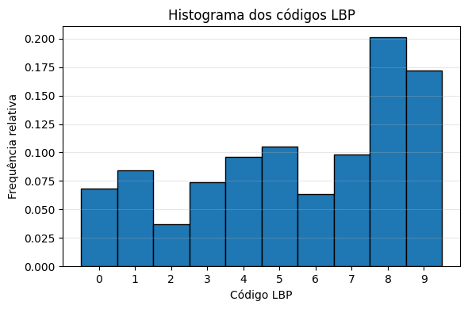
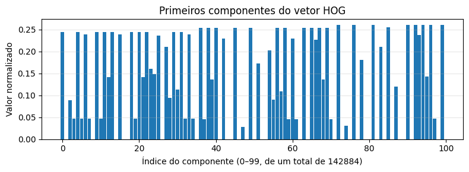
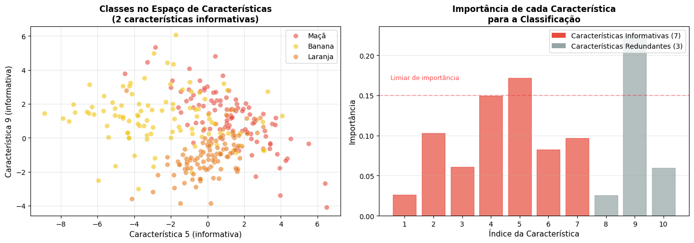
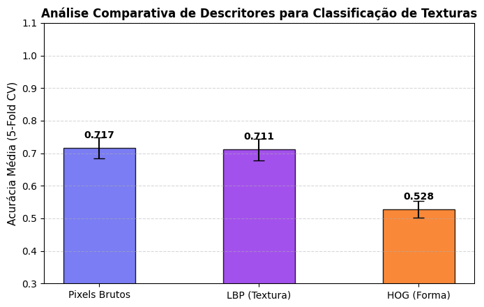

# Instala apenas bibliotecas ausentes
import importlib
import subprocess
import sys
PACOTES = {
"cv2": "opencv-python",
"skimage": "scikit-image",
"numpy": "numpy",
"sklearn": "scikit-learn",
"matplotlib": "matplotlib",
"pandas": "pandas",
"seaborn": "seaborn",
"tabulate": "tabulate",
"kaleido": "kaleido",
}
for modulo, pacote in PACOTES.items():
try:
importlib.import_module(modulo)
except ImportError:
subprocess.run(
[sys.executable, "-m", "pip", "install", "-q", pacote],
check=True
)
# ==========================================================
# Bibliotecas
# ==========================================================
# Computação científica
import numpy as np
import pandas as pd
# Visualização
import matplotlib.cm as cm
import matplotlib.pyplot as plt
import seaborn as sns
# Visão computacional
import cv2
from skimage import data as skdata
from skimage.feature import hog, local_binary_pattern
# Aprendizado de máquina
from sklearn.datasets import load_digits, make_classification
from sklearn.model_selection import cross_val_score, train_test_split
from sklearn.neighbors import KNeighborsClassifier
from sklearn.ensemble import RandomForestClassifier
from sklearn.preprocessing import StandardScaler
from sklearn.metrics import (
accuracy_score,
classification_report,
confusion_matrix,
f1_score,
precision_score,
recall_score,
)7 Classificação de Imagens e Reconhecimento de Padrões


No Capítulo 6, a transição da Parte I para a Parte II foi apresentada por meio de duas aplicações que já exigiam decisões automatizadas: o reconhecimento de marcas em folhas de resposta (OMR) e a detecção de defeitos em inspeção industrial. Em ambos os casos, no entanto, as decisões dependiam de regras geométricas e de limiares definidos manualmente, como determinar se um disco era suficientemente circular ou se uma região era escura o bastante.
Este capítulo formaliza o problema mais geral subjacente a essas aplicações: dado um conjunto de exemplos rotulados, como treinar um sistema para classificar automaticamente novas imagens ou regiões de interesse? Essa questão está no núcleo do Reconhecimento de Padrões, disciplina que fundamenta grande parte das tarefas modernas de Visão Computacional, desde a classificação de imagens até a detecção de objetos e a segmentação semântica, exploradas nos próximos capítulos.
Serão estudados os principais descritores clássicos de imagem (cor, textura e forma/gradiente) e o classificador k-Vizinhos mais Próximos (k-Nearest Neighbors — k-NN), escolhido por sua simplicidade conceitual e por evidenciar, de forma direta, a relação entre o espaço de características, as métricas de distância e as fronteiras de decisão — conceitos que permanecem centrais mesmo em classificadores baseados em redes neurais profundas, estudados no capítulo final desta parte.
7.1 Objetivos do Capítulo
Ao final deste capítulo, o estudante deverá ser capaz de:
- Compreender o pipeline clássico de reconhecimento de padrões: aquisição, pré-processamento, extração de descritores, classificação e avaliação;
- Extrair e interpretar descritores clássicos de cor, textura (Local Binary Patterns — LBP) e forma/gradiente (Histogram of Oriented Gradients — HOG);
- Implementar e treinar um classificador k-NN para tarefas de classificação de imagens;
- Avaliar classificadores por meio de métricas como acurácia, matriz de confusão, precisão e revocação;
- Analisar o efeito do parâmetro k e da dimensionalidade do espaço de características no desempenho do classificador;
- Reconhecer as limitações dos descritores artesanais (hand-crafted features) e compreender a motivação para a transição, nos próximos capítulos, para descritores aprendidos automaticamente.
7.2 Configuração do Ambiente
Os exemplos deste capítulo utilizam bibliotecas amplamente empregadas em Processamento Digital de Imagens, Visão Computacional e Aprendizado de Máquina. O bloco abaixo instala os pacotes necessários; em ambientes que já os possuam, a execução pode ser ignorada.
Assim como no capítulo anterior, será utilizado o módulo didático morph.py, responsável por padronizar a leitura, a exibição e o processamento de imagens ao longo do livro.
import os
import urllib.request
if not os.path.exists("morph.py"):
urllib.request.urlretrieve(
"https://raw.githubusercontent.com/fzampirolli/pdi-vc/master/morph/morph.py",
"morph.py",
)
import morph
from morph import mm
print(f"✅ Ambiente pronto. morph {getattr(morph, '__version__', 'local_file')}")✅ Ambiente pronto. morph 1.1.67.3 Um Problema Concreto: Classificação de Frutas
Antes de apresentar os fundamentos teóricos, considere o seguinte problema, que será utilizado como exemplo ao longo deste capítulo para ilustrar os principais conceitos de reconhecimento de padrões.
O cenário: Uma fazenda automatizada utiliza um sistema de Visão Computacional para separar maçãs, bananas e laranjas em linhas de embalagem.
O desafio: As frutas chegam à esteira em diferentes posições e orientações, sob condições de iluminação que podem variar. Além disso, folhas, sombras e pequenas oclusões podem dificultar sua identificação. Como desenvolver um sistema capaz de classificá-las corretamente?
Uma possível abordagem:
Extrair descritores que representem características relevantes das frutas:
- Cor: distribuição predominante das cores;
- Textura: diferenças na superfície da casca;
- Forma: características geométricas do contorno.
Treinar um classificador utilizando exemplos previamente rotulados.
Utilizar o modelo treinado para classificar automaticamente novas frutas.
A Figura 7.1 ilustra, de forma conceitual, como diferentes frutas podem ser representadas em um espaço de características tridimensional.
DicaReflita antes de continuar
Se cada fruta fosse representada apenas pelos valores de intensidade de seus pixels, seria possível distingui-las de forma confiável? Que tipos de informação poderiam ser extraídos da imagem para facilitar essa tarefa?
np.random.seed(42)
centros = {
"Maçã": [0.8, 0.2, 0.9],
"Banana": [0.3, 0.1, 0.2],
"Laranja": [0.9, 0.8, 0.8],
}
fig = plt.figure(figsize=(5, 5))
ax = fig.add_subplot(projection="3d")
for fruta, centro, cor, marcador in zip(
centros,
centros.values(),
["red", "gold", "orange"],
["o", "s", "^"],
):
X = np.clip(np.random.normal(centro, 0.08, (70, 3)), 0, 1)
ax.scatter(X[:, 0], X[:, 1], X[:, 2],
c=cor, marker=marcador, s=35,
alpha=0.7, label=fruta)
ax.set(
xlim=(0,1), ylim=(0,1), zlim=(0,1),
xlabel="Intensidade de cor",
ylabel="Textura",
zlabel="Forma",
title="Espaço de Características"
)
ax.view_init(elev=25, azim=-60)
ax.legend(title="Frutas")
ax.zaxis.labelpad = 0.01
plt.tight_layout()
plt.show()
7.4 🗺️ Panorama do Capítulo: O Pipeline Clássico de Classificação de Imagens
Antes de prosseguir, é útil apresentar uma visão integrada do que será estudado. A Figura 8.1 mostra o fluxo geral de um sistema clássico de classificação de imagens, desde a imagem de entrada até a etapa de atribuição do rótulo final. Nas próximas seções, cada uma das etapas desse processo será estudada em detalhes.

NotaEscopo deste capítulo
Neste capítulo, o foco recai exclusivamente sobre o classificador k-NN, por sua simplicidade didática e por ilustrar de forma intuitiva o conceito de espaço de características. Outros classificadores tradicionais amplamente utilizados em Reconhecimento de Padrões — como Árvores de Decisão, Regras de Classificação e Máquinas de Vetores de Suporte (SVM) — são discutidos em profundidade em Quilici-Gonzalez; Zampirolli (2014), especialmente em sua 2ª edição, atualmente em produção (Quilici-Gonzalez; Zampirolli; Souza, 2026).
7.5 Fundamentos de Reconhecimento de Padrões
Um sistema de reconhecimento de padrões tem como objetivo atribuir uma categoria (rótulo) a uma observação — uma imagem inteira, uma região de interesse ou um sinal — com base em exemplos previamente rotulados. De forma geral, esse processo é organizado nas seguintes etapas:
- Aquisição: obtenção da imagem ou do sinal a ser classificado;
- Pré-processamento: normalização, remoção de ruído, correção geométrica ou de iluminação — etapas já estudadas nos capítulos anteriores;
- Extração de descritores (features): transformação da imagem em um vetor de características de dimensão fixa, que representa as propriedades relevantes para a tarefa de classificação;
- Classificação: aplicação de um modelo que associa o vetor de características a uma classe;
- Avaliação: análise do desempenho do modelo em um conjunto de dados independente daquele utilizado para o treinamento.
O conjunto de todos os vetores de características possíveis constitui o espaço de características (feature space). Um bom descritor produz representações que aproximam, nesse espaço, observações da mesma classe e afastam observações de classes distintas. Essa propriedade favorece métodos de classificação baseados em proximidade, como o k-NN, e também beneficia diversos outros classificadores.
A Figura 7.1 ilustra esse conceito de forma esquemática: cada fruta é representada por um ponto em um espaço de características de três dimensões (cor, textura e forma). Embora esse espaço seja apenas uma simplificação didática, ele mostra como amostras da mesma classe tendem a formar agrupamentos, enquanto classes diferentes ocupam regiões distintas, facilitando a tarefa de classificação.
7.6 Extração de Descritores Clássicos
Antes da popularização das redes neurais profundas, os descritores de imagem eram, em sua maioria, projetados manualmente por especialistas (hand-crafted features), com base em propriedades estatísticas ou geométricas conhecidas. Três famílias clássicas são particularmente relevantes:
- Descritores de cor: histogramas de intensidade ou de matiz, que capturam a distribuição dos valores de cor de uma região, já introduzidos no Capítulo 3 por meio da função
mm.hist; - Descritores de textura: capturam padrões locais de repetição, rugosidade ou orientação, como o Local Binary Patterns (LBP), estudado a seguir;
- Descritores de forma/gradiente: descrevem a distribuição das bordas e das orientações do gradiente, como o Histogram of Oriented Gradients (HOG), amplamente empregado na detecção de pessoas e outros objetos.
Para comparar a informação capturada por cada abordagem, a Figura 7.3 mostra como diferentes técnicas “enxergam” a mesma imagem.
# Carregar imagem de exemplo
imagem = skdata.camera()
# Aplicar descritores
lbp_img = local_binary_pattern(
imagem,
P=8,
R=1,
method="uniform"
)
# Converter o LBP para RGB apenas para facilitar a visualização
lbp_norm = (lbp_img - lbp_img.min()) / (lbp_img.max() - lbp_img.min() + 1e-8)
lbp_rgb = (cm.nipy_spectral(lbp_norm)[..., :3] * 255).astype("uint8")
hog_features, hog_img = hog(
imagem,
orientations=9,
pixels_per_cell=(8, 8),
cells_per_block=(2, 2),
visualize=True,
)
# Exibição padronizada
mm.show(
[imagem, lbp_rgb, hog_img],
titles=[
"Imagem Original\n(como o humano vê)",
"LBP: Textura\n(cada cor = um código LBP)",
"HOG: Gradientes e Contornos\n(regiões claras = maior intensidade)",
],
cols=3,
figsize=(12, 4),
)
print("Observe como cada descritor destaca propriedades diferentes:")
print("• LBP: evidencia padrões locais de textura.")
print("• HOG: evidencia contornos e orientações das bordas.")
print("• Imagem original: contém apenas os valores de intensidade.")
Observe como cada descritor destaca propriedades diferentes:
• LBP: evidencia padrões locais de textura.
• HOG: evidencia contornos e orientações das bordas.
• Imagem original: contém apenas os valores de intensidade.7.6.1 Local Binary Patterns (LBP)
O LBP é um descritor de textura que codifica, para cada pixel central \(g_c\), a relação entre sua intensidade e a dos \(P\) vizinhos dispostos em uma vizinhança circular de raio \(R\):
\[ \mathrm{LBP}_{P,R}(x_c, y_c) = \sum_{p=0}^{P-1} s(g_p - g_c)\, 2^p, \qquad s(z) = \begin{cases} 1, & z \geq 0 \\ 0, & z < 0 \end{cases} \]
em que:
- \((x_c, y_c)\) são as coordenadas do pixel central;
- \(g_c\) é a intensidade do pixel central;
- \(g_p\) é a intensidade do \(p\)-ésimo pixel vizinho;
- \(P\) é o número de vizinhos considerados;
- \(R\) é o raio da vizinhança circular;
- \(p\) é o índice do vizinho, com \(p = 0, 1, \ldots, P-1\);
- \(s(z)\) é a função limiar definida na equação, em que \(z = g_p - g_c\); ela assume valor 1 quando \(z \geq 0\) e 0 quando \(z < 0\);
- \(2^p\) corresponde ao peso binário associado ao \(p\)-ésimo vizinho.
O código LBP obtido descreve o padrão local de contraste ao redor do pixel. O histograma desses códigos forma um vetor de características compacto para representar a textura da imagem (Figura 7.4). Neste capítulo utiliza-se a variante uniforme, que agrupa padrões não uniformes em uma única categoria, reduzindo a dimensionalidade e aumentando a robustez do descritor.
plt.figure(figsize=(6, 4))
plt.hist(
lbp_img.ravel(),
bins=np.arange(-0.5, lbp_img.max() + 1.5, 1),
density=True,
edgecolor="black",
)
plt.title("Histograma dos códigos LBP")
plt.xlabel("Código LBP")
plt.ylabel("Frequência relativa")
plt.xticks(range(int(lbp_img.max()) + 1))
plt.grid(axis="y", alpha=0.3)
plt.tight_layout()
plt.show()
DicaFunção
local_binary_pattern
A implementação utilizada neste capítulo é fornecida pela biblioteca scikit-image:
local_binary_pattern(
imagem,
P=8,
R=1,
method="uniform"
)onde:
image: imagem em escala de cinza;P: número de vizinhos igualmente espaçados na vizinhança circular;R: raio da vizinhança, em pixels;method: estratégia de codificação. Neste capítulo utiliza-se o valor"uniform".
A equação apresentada anteriormente descreve o LBP original. Na implementação adotada neste capítulo, a opção method="uniform" calcula inicialmente esse código e, em seguida, remapeia os padrões não uniformes para uma única categoria, reduzindo a dimensionalidade do descritor e tornando-o mais robusto a pequenas variações locais.
A Figura 7.3 apresenta a representação visual do LBP, enquanto a Figura 7.4 mostra o histograma dos códigos LBP utilizado como vetor de características.
O Projeto Prático 2 (seção Comparação de Descritores para Classificação de Texturas) emprega o LBP na classificação de diferentes tipos de textura sintética.
7.6.2 Histogram of Oriented Gradients (HOG)
O HOG é um descritor que representa a forma de um objeto por meio da distribuição das orientações do gradiente local. Assim como no operador de Canny (Capítulo 6), calcula-se inicialmente o gradiente:
\[ |\nabla f(x,y)| = \sqrt{\left(\frac{\partial f}{\partial x}\right)^2 + \left(\frac{\partial f}{\partial y}\right)^2}, \qquad \theta(x,y) = \operatorname{atan2}\!\left( \frac{\partial f}{\partial y}, \frac{\partial f}{\partial x} \right). \]
em que:
- \(f(x,y)\) é a intensidade da imagem no pixel \((x,y)\);
- \(\frac{\partial f}{\partial x}\) e \(\frac{\partial f}{\partial y}\) são, respectivamente, as derivadas parciais da imagem nas direções horizontal e vertical;
- \(|\nabla f(x,y)|\) é a magnitude do vetor gradiente no pixel \((x,y)\), indicando a intensidade da variação local da imagem;
- \(\theta(x,y)\) é a orientação do vetor gradiente no pixel \((x,y)\), calculada pela função \(\operatorname{atan2}\), cujo resultado pertence ao intervalo \((-\pi,\pi]\).
Embora \(\theta(x,y)\), como calculado pela função \(\operatorname{atan2}\), pertença ao intervalo \((-\pi,\pi]\), a implementação padrão do HOG utiliza o gradiente não sinalizado (unsigned): orientações opostas (por exemplo, \(0\) e \(\pi\)) são tratadas como equivalentes, e os ângulos são mapeados para o intervalo \([0,\pi)\) antes da construção do histograma. Essa escolha torna o descritor invariante à direção do contraste (por exemplo, uma borda clara-escura e uma borda escura-clara produzem a mesma orientação).
A imagem é então dividida em células (cells). Para cada célula, constrói-se um histograma das orientações do gradiente, ponderado pela magnitude correspondente. A concatenação dos histogramas de todas as células forma o vetor de características HOG, que representa a distribuição espacial das orientações do gradiente e captura informações sobre a forma e os contornos do objeto (Figura 7.5).
n = 100
plt.figure(figsize=(8, 3))
plt.bar(
range(n),
hog_features[:n],
width=0.9
)
plt.title("Primeiros componentes do vetor HOG")
plt.xlabel(f"Índice do componente (0–{n-1}, de um total de {hog_features.shape[0]})")
plt.ylabel("Valor normalizado")
plt.grid(axis="y", alpha=0.3)
plt.tight_layout()
plt.show()
DicaFunção
hog
A extração do descritor HOG é realizada pela função:
hog(
image,
orientations=9,
pixels_per_cell=(8, 8),
cells_per_block=(2, 2),
visualize=True,
)Os principais parâmetros são:
image: imagem de entrada;orientations: número de divisões angulares do histograma de orientações em cada célula;pixels_per_cell: tamanho, em pixels, de cada célula onde o histograma é calculado;cells_per_block: número de células utilizadas na normalização do descritor;visualize: quandoTrue, retorna também uma imagem ilustrando os gradientes utilizados pelo HOG.
A equação apresentada anteriormente descreve o cálculo da magnitude e da orientação do gradiente, que constituem a base do descritor HOG. Na implementação adotada neste capítulo, a função hog() utiliza essas informações para construir histogramas de orientações em cada célula da imagem e, em seguida, realiza a normalização em blocos (cells_per_block), reduzindo a sensibilidade do descritor a variações de iluminação e contraste.
A Figura 7.3 apresenta a representação visual do HOG, enquanto a Figura 7.5 ilustra os primeiros componentes do vetor de características extraído da imagem.
O Projeto Prático 1 (seção Classificação de Dígitos Manuscritos com k-NN) compara o desempenho de descritores HOG com o uso direto das intensidades dos pixels como vetor de características.
7.6.3 O Impacto da Escala e a Normalização de Características
O classificador \(k\)-NN toma suas decisões com base na distância entre os vetores de características. Por isso, a escala de cada característica influencia diretamente o resultado da classificação. Se uma variável apresentar valores muito maiores do que as demais (por exemplo, uma intensidade de cor variando de \(0\) a \(255\), enquanto um índice de circularidade varia de \(0\) a \(1\)), ela tende a dominar o cálculo da distância, reduzindo a influência dos outros descritores.
Para evitar esse problema, aplica-se uma etapa de normalização das características, geralmente por meio da padronização (Z-score standardization). Nesse procedimento, cada característica passa a ter média igual a zero e desvio-padrão igual a um, tornando comparáveis grandezas originalmente medidas em escalas diferentes.
A padronização é realizada pela transformação
\[ z = \frac{x - \mu}{\sigma}, \]
em que:
- \(x\) é o valor original da característica;
- \(\mu\) é a média dessa característica calculada sobre o conjunto de treinamento;
- \(\sigma\) é o desvio-padrão da característica;
- \(z\) é o valor padronizado.
Após essa transformação, todas as características passam a possuir média igual a zero e desvio-padrão igual a um, permitindo que contribuam de forma equilibrada para o cálculo das distâncias.
DicaClasse
StandardScaler
A padronização utilizada neste capítulo é realizada pela classe StandardScaler, da biblioteca scikit-learn:
from sklearn.preprocessing import StandardScaler
scaler = StandardScaler()
X_norm = scaler.fit_transform(X)em que:
StandardScaler(): cria o objeto responsável pela padronização;fit_transform(X): calcula a média e o desvio-padrão de cada característica do conjuntoXe retorna a matriz padronizada.
Na prática, o método fit_transform() executa duas etapas: primeiro (fit), estima a média (\(\mu\)) e o desvio-padrão (\(\sigma\)) de cada característica; em seguida (transform), aplica a transformação de padronização apresentada anteriormente a todos os valores da matriz de entrada.
A Figura 7.6 mostra o efeito da normalização. Visualmente, a distribuição dos pontos permanece a mesma; o que muda é a escala dos eixos. Sem a normalização, a característica de maior magnitude domina o cálculo das distâncias entre as amostras. Após a padronização, todas as características passam a contribuir de forma equilibrada para o cálculo das distâncias utilizadas pelo classificador \(k\)-NN.
# Dados sintéticos com escalas muito diferentes
np.random.seed(42)
X_demo = np.random.randn(20, 2) * [100, 1]
y_demo = np.array([0] * 10 + [1] * 10)
print("Efeito da normalização:")
print(" Característica 1: escala ≈ 100")
print(" Característica 2: escala ≈ 1")
print("\nSem normalização, a primeira característica domina o cálculo das distâncias.")
print("Com normalização, ambas contribuem de forma equilibrada.")
print("\nA normalização é essencial quando as características possuem escalas diferentes.")
fig, axes = plt.subplots(1, 2, figsize=(10, 4))
# Sem normalização
axes[0].scatter(
X_demo[y_demo == 0, 0], X_demo[y_demo == 0, 1],
c="blue", label="Classe 0"
)
axes[0].scatter(
X_demo[y_demo == 1, 0], X_demo[y_demo == 1, 1],
c="red", label="Classe 1"
)
axes[0].set_title("Sem Normalização\n(escalas diferentes)")
axes[0].set_xlabel("Característica 1 (escala 100)")
axes[0].set_ylabel("Característica 2 (escala 1)")
axes[0].legend()
# Com normalização
scaler = StandardScaler()
X_norm = scaler.fit_transform(X_demo)
axes[1].scatter(
X_norm[y_demo == 0, 0], X_norm[y_demo == 0, 1],
c="blue", label="Classe 0"
)
axes[1].scatter(
X_norm[y_demo == 1, 0], X_norm[y_demo == 1, 1],
c="red", label="Classe 1"
)
axes[1].set_title("Com Normalização\n(características balanceadas)")
axes[1].set_xlabel("Característica 1")
axes[1].set_ylabel("Característica 2")
axes[1].legend()
plt.tight_layout()
plt.show()Efeito da normalização:
Característica 1: escala ≈ 100
Característica 2: escala ≈ 1
Sem normalização, a primeira característica domina o cálculo das distâncias.
Com normalização, ambas contribuem de forma equilibrada.
A normalização é essencial quando as características possuem escalas diferentes.
7.7 📌 Mapa Conceitual
Até aqui, foram apresentados os descritores clássicos (LBP, HOG, pixels brutos) e a forma como eles organizam as amostras em um espaço de características. A Figura 7.7 sintetiza esse percurso e situa essas etapas dentro do fluxo geral de um sistema clássico de classificação de imagens, indicando também as etapas seguintes — classificação (k-NN) e avaliação dos resultados — que serão formalizadas nas próximas seções.

7.8 Descritores na Prática
Após conhecer os principais descritores clássicos, é natural perguntar como eles influenciam o desempenho de um classificador em situações próximas às encontradas na prática.
Nesta seção, compara-se o uso de três representações distintas das mesmas imagens: intensidades dos pixels, descritores LBP e descritores HOG. Para tornar o experimento mais realista, adiciona-se ruído sintético aos dados, em intensidades diferentes para cada descritor — uma forma simplificada de simular o fato de que, na prática, diferentes representações toleram de forma desigual as imperfeições da captura (ruído do sensor, pequenas variações de posição, etc.).
A Figura 7.8 apresenta as matrizes de confusão obtidas para cada descritor, permitindo identificar em quais classes ocorrem os principais erros de classificação. A interpretação dessas matrizes foi introduzida no Capítulo 1, quando foram apresentados os conceitos de Verdadeiro Positivo (VP), Falso Positivo (FP), Verdadeiro Negativo (VN) e Falso Negativo (FN). Esses conceitos foram explorados nos EPs 01_02 (métricas de classificação) e 01_03 (mean Average Precision – mAP), disponíveis em:
- https://fzampirolli.github.io/pdi-vc/eps/py.pt/EP01_02.html
- https://fzampirolli.github.io/pdi-vc/eps/py.pt/EP01_03.html
Neste capítulo, as matrizes de confusão são empregadas para analisar como diferentes descritores influenciam o desempenho do classificador.
Em seguida, a Figura 7.9 resume a acurácia global obtida por cada descritor.
Os resultados mostram que o desempenho do classificador depende diretamente da representação escolhida para descrever as imagens. Enquanto o uso direto das intensidades dos pixels é mais sensível às degradações introduzidas, os descritores LBP e HOG preservam melhor as informações relevantes para a classificação, resultando em maior desempenho nesse cenário. É importante ressaltar que os níveis de ruído aplicados a cada descritor foram escolhidos apenas para fins didáticos, de modo a ilustrar o princípio geral de que descritores mais elaborados podem ser mais robustos a degradações — o que não significa que essa relação se verifique sempre, como o estudo de caso da próxima seção demonstrará.
DicaComo o experimento é realizado
Como o objetivo desta seção é comparar apenas o efeito dos descritores, gera-se um conjunto de dados sintético simples: três nuvens de pontos gaussianas, centradas nos mesmos valores de “cor, textura e forma” já utilizados na Figura 7.1 — o mesmo padrão empregado desde o início do capítulo para representar as três classes de frutas.
import numpy as np
from sklearn.model_selection import train_test_split
from sklearn.neighbors import KNeighborsClassifier
from sklearn.metrics import accuracy_score, confusion_matrixcentros = {
"Maçã": [0.8, 0.2, 0.9],
"Banana": [0.3, 0.1, 0.2],
"Laranja": [0.9, 0.8, 0.8],
}
n_por_classe = 100
X = np.vstack([
np.random.normal(centro, 0.12, (n_por_classe, 3))
for centro in centros.values()
])
y = np.repeat(list(centros.keys()), n_por_classe)em que:
centros: dicionário com o ponto médio de cada classe no espaço de características (cor, textura, forma);n_por_classe: número de amostras geradas por classe;np.random.normal(centro, 0.12, (n_por_classe, 3)): geran_por_classeamostras ao redor de cada centro, com desvio-padrão 0,12 em cada dimensão;np.repeat(list(centros.keys()), n_por_classe): gera o vetor de rótulos correspondente, na mesma ordem dos centros.
Em seguida, utiliza-se o fluxo de treinamento e avaliação:
train_test_split(X, y, test_size=0.3): divide os dados em treinamento (70%) e teste (30%);KNeighborsClassifier(n_neighbors=5): cria um classificador \(k\)-NN com \(k=5\) vizinhos;fit(X_train, y_train): ajusta o modelo aos dados de treinamento;predict(X_test): classifica as amostras de teste;accuracy_score(y_test, y_pred): calcula a acurácia;confusion_matrix(y_test, y_pred): gera a matriz de confusão.
Neste experimento, o conjunto de treinamento, o classificador e o método de avaliação permanecem exatamente os mesmos. A única diferença entre os experimentos é a representação utilizada para cada imagem (pixels brutos, LBP ou HOG), permitindo avaliar exclusivamente a influência do descritor sobre o desempenho do classificador.
classes = ["Maçã", "Banana", "Laranja"]
np.random.seed(42)
# Mesmos centros de classe (cor, textura, forma) utilizados no
# exemplo anterior, agora reaproveitados para gerar os dados
# sintéticos de treino e teste deste experimento.
centros = {
"Maçã": [0.8, 0.2, 0.9],
"Banana": [0.3, 0.1, 0.2],
"Laranja": [0.9, 0.8, 0.8],
}
n_por_classe = 100
X = np.vstack([
np.random.normal(centro, 0.12, (n_por_classe, 3))
for centro in centros.values()
])
y = np.repeat(list(centros.keys()), n_por_classe)
# Simular descritores com diferentes níveis de sensibilidade ao ruído.
# Quanto maior o ruído adicionado, pior tende a ser a representação.
descritores = {
"Pixels Brutos": X + 0.5 * np.random.randn(*X.shape),
"LBP": X + 0.3 * np.random.randn(*X.shape),
"HOG": X + 0.2 * np.random.randn(*X.shape),
}
# Criar uma única figura com 3 subplots lado a lado para as matrizes
fig, axes = plt.subplots(1, 3, figsize=(14, 4))
resultados = {}
for idx, (nome, Xd) in enumerate(descritores.items()):
X_train, X_test, y_train, y_test = train_test_split(Xd, y, test_size=0.3, random_state=42)
knn = KNeighborsClassifier(n_neighbors=5)
knn.fit(X_train, y_train)
y_pred = knn.predict(X_test)
acc = accuracy_score(y_test, y_pred)
resultados[nome] = acc
# Matriz de confusão no subplot correspondente
cm = confusion_matrix(y_test, y_pred, labels=classes)
sns.heatmap(
cm,
annot=True,
fmt="d",
cmap="Blues",
cbar=False,
xticklabels=classes,
yticklabels=classes,
ax=axes[idx],
)
axes[idx].set_title(
f"{nome}\nAcurácia: {acc:.3f}",
fontsize=11,
fontweight="bold"
)
axes[idx].set_xlabel("Classe Predita")
axes[idx].set_ylabel("Classe Real")
plt.tight_layout()
plt.show()
# Comparação visual em uma figura isolada
plt.figure(figsize=(6, 3.5))
nomes = list(resultados.keys())
acuracia = list(resultados.values())
colors = ['#6366f1', '#f97316', '#22c55e']
bars = plt.bar(nomes, acuracia, color=colors, width=0.5)
plt.ylabel('Acurácia Global')
plt.title('Desempenho Geral dos Descritores sob Ruído Realista', fontsize=12, fontweight='bold')
plt.ylim(0.5, 1.0)
plt.grid(axis='y', linestyle='--', alpha=0.5)
# Adicionar os valores acima das barras usando round padrão para exibição
for bar, val in zip(bars, acuracia):
plt.text(bar.get_x() + bar.get_width()/2, bar.get_height() + 0.01,
f'{val:.3f}', ha='center', fontweight='bold', fontsize=10)
plt.tight_layout()
plt.show()
print("Análise dos resultados:")
print("- Pixels Brutos: Sensíveis a variações locais de iluminação e ruído.")
print("- LBP: Boa tolerância para variações monotônicas de iluminação global.")
print("- HOG: Excelente para contornos e formas estáveis sob pequenas flutuações geométricas.")
Análise dos resultados:
- Pixels Brutos: Sensíveis a variações locais de iluminação e ruído.
- LBP: Boa tolerância para variações monotônicas de iluminação global.
- HOG: Excelente para contornos e formas estáveis sob pequenas flutuações geométricas.7.9 Um Problema Concreto: Simulando Descritores de Frutas
Retomando o problema de classificação de frutas apresentado no início do capítulo, cada imagem pode ser representada por um vetor de características (feature vector) obtido a partir da extração de descritores de cor, textura e forma. A Tabela 7.1 apresenta alguns descritores frequentemente utilizados em aplicações de Visão Computacional, incluindo técnicas introduzidas no Capítulo 3 e neste capítulo.
| Característica | Descrição |
|---|---|
| R, G, B | intensidade média dos canais vermelho, verde e azul |
| NC | intensidade média em níveis de cinza (grayscale) |
| LBP | descritor de textura (Local Binary Pattern) |
| HOG | descritor de forma (Histogram of Oriented Gradients) |
| Área | número de pixels do objeto |
| Perímetro | comprimento do contorno |
| Circularidade | medida de quão circular é o objeto |
| Razão largura/altura | proporção entre largura e altura da região |
Nesse exemplo, cada imagem é representada pelo vetor
\[ X=(R,G,B,NC,\text{LBP},\text{HOG},\text{Área},\text{Perímetro},\text{Circularidade},\text{Razão}). \]
NotaSimplificação adotada nesta tabela
Na prática, LBP e HOG não são valores escalares, mas histogramas com dezenas ou centenas de componentes. Nesta seção, cada um deles é representado por um único valor apenas para simplificar a apresentação. Em aplicações reais, essas posições seriam substituídas pelas componentes completas dos respectivos histogramas.
Em aplicações reais, nem todos os descritores contribuem igualmente para distinguir as classes. Alguns fornecem informações mais relevantes, enquanto outros podem ser redundantes ou pouco discriminativos.
Para reproduzir esse cenário de forma controlada, será utilizado o make_classification(), da biblioteca scikit-learn. A função gera um conjunto de dados sintético cujas características podem ser interpretadas como descritores de imagens, permitindo definir quantas delas serão informativas para a classificação.
Neste exemplo, são geradas dez características sintéticas, das quais apenas sete (n_informative=7) participam da separação entre as três classes. As demais simulam atributos pouco informativos ou redundantes. A Figura 7.10 apresenta uma representação conceitual desse processo.
Antes de introduzir o algoritmo que será estudado em detalhe neste capítulo, cabe uma observação: para identificar, entre as dez características sintéticas, quais são mais discriminativas — e assim selecionar duas delas para a visualização em 2D —, utiliza-se um Random Forest apenas como ferramenta auxiliar de diagnóstico. O KNN, foco deste capítulo, é apresentado a seguir.
# Configuração para reprodução
np.random.seed(42)
# Geração de dados sintéticos com características controladas
X, y = make_classification(
n_samples=300,
n_features=10,
n_informative=7,
n_redundant=2,
n_repeated=1, # Uma característica é cópia de outra
n_classes=3,
n_clusters_per_class=1,
random_state=42,
)
# Criar figura com dois subplots
fig, (ax1, ax2) = plt.subplots(1, 2, figsize=(14, 5))
# Subplot 1: Visualização das classes em 2D (usando duas características informativas)
# Identificar quais características são mais informativas
rf = RandomForestClassifier(n_estimators=100, random_state=42)
rf.fit(X, y)
importancias = rf.feature_importances_
caracteristicas_informativas = np.argsort(importancias)[-2:] # Duas mais importantes
cores = {0: "#e74c3c", 1: "#f1c40f", 2: "#e67e22"} # Maçã, Banana, Laranja
rotulos = {0: "Maçã", 1: "Banana", 2: "Laranja"}
for classe in range(3):
idx = y == classe
ax1.scatter(X[idx, caracteristicas_informativas[0]],
X[idx, caracteristicas_informativas[1]],
c=cores[classe], label=rotulos[classe],
alpha=0.6, s=50, edgecolors="white", linewidth=0.5)
ax1.set_xlabel(f"Característica {caracteristicas_informativas[0]+1} (informativa)", fontsize=11)
ax1.set_ylabel(f"Característica {caracteristicas_informativas[1]+1} (informativa)", fontsize=11)
ax1.set_title("Classes no Espaço de Características\n(2 características informativas)",
fontsize=12, fontweight="bold")
ax1.legend(loc="upper right")
ax1.grid(alpha=0.3)
# Subplot 2: Importância das características
bars = ax2.bar(range(1, 11), importancias, color="#4a90d9", alpha=0.7)
ax2.set_xlabel("Índice da Característica", fontsize=11)
ax2.set_ylabel("Importância", fontsize=11)
ax2.set_title("Importância de cada Característica\npara a Classificação",
fontsize=12, fontweight="bold")
ax2.set_xticks(range(1, 11))
ax2.grid(axis="y", alpha=0.3)
# Colorir barras para destacar características
cores_barras = ["#e74c3c" if i < 7 else "#95a5a6" for i in range(10)]
for bar, cor in zip(bars, cores_barras):
bar.set_color(cor)
# Adicionar legenda
from matplotlib.patches import Patch
legenda_elements = [
Patch(facecolor="#e74c3c", label="Características Informativas (7)"),
Patch(facecolor="#95a5a6", label="Características Redundantes (3)")
]
ax2.legend(handles=legenda_elements, loc="upper right")
# Anotar o número de características informativas
ax2.axhline(y=0.15, color="red", linestyle="--", alpha=0.3)
ax2.text(0.5, 0.17, "Limiar de importância", fontsize=9, color="red", alpha=0.7)
plt.tight_layout()
plt.show()
print("\n🔍 Análise dos dados gerados:")
print(f" • Total de amostras: {X.shape[0]}")
print(f" • Número de características: {X.shape[1]}")
print(f" • Características informativas: 7 (colunas 1 a 7 do gráfico)")
print(f" • Características redundantes: 2 (colunas 8 e 9)")
print(f" • Características repetidas: 1 (coluna 10)")
print(f" • Distribuição das classes: {np.bincount(y)}")
🔍 Análise dos dados gerados:
• Total de amostras: 300
• Número de características: 10
• Características informativas: 7 (colunas 1 a 7 do gráfico)
• Características redundantes: 2 (colunas 8 e 9)
• Características repetidas: 1 (coluna 10)
• Distribuição das classes: [101 98 101]7.10 Classificador k-NN: Como Funciona por Dentro
O k-Nearest Neighbors (k-NN) é um dos algoritmos de classificação mais simples e intuitivos da Aprendizagem de Máquina. Diferentemente de muitos classificadores, ele não constrói explicitamente um modelo durante a etapa de treinamento. Em vez disso, armazena as amostras rotuladas e, quando uma nova amostra precisa ser classificada, procura aquelas que mais se assemelham a ela.
O princípio do algoritmo baseia-se na hipótese de que amostras com características semelhantes tendem a pertencer à mesma classe. Para quantificar essa proximidade, o k-NN utiliza uma medida de distância entre os vetores de características.
Como exemplo, considere a Tabela 7.2, que apresenta uma versão simplificada do problema de classificação de frutas utilizando apenas duas características: intensidade de cor e circularidade, ambas normalizadas no intervalo de 0 a 1.
| Amostra | Cor | Circularidade | Classe |
|---|---|---|---|
| Fruta 1 | 0,82 | 0,88 | Maçã |
| Fruta 2 | 0,30 | 0,20 | Banana |
| Fruta 3 | 0,88 | 0,85 | Maçã |
| Fruta ? (teste) | 0,80 | 0,90 | ? |
Observando apenas essas duas características, percebe-se que a fruta de teste está muito mais próxima das amostras rotuladas como Maçã do que da amostra rotulada como Banana. Na seção seguinte, essa noção intuitiva de proximidade será formalizada por meio de uma métrica de distância, utilizada pelo algoritmo para identificar os vizinhos mais próximos e decidir a classe da nova amostra.
7.10.1 Métrica de Distância
A proximidade entre duas amostras é normalmente quantificada pela distância euclidiana, definida por
\[ d(x,x_i)=\|x-x_i\|_2= \sqrt{\sum_{j=1}^{n}(x_j-x_{i,j})^2}, \]
em que:
- \(x\) é a amostra de teste;
- \(x_i\) é uma amostra do conjunto de treinamento;
- \(n\) é o número de características;
- \(x_j\) e \(x_{i,j}\) representam a \(j\)-ésima característica.
Na implementação deste capítulo, \(x\) corresponde a uma linha de X_test e \(x_i\) a uma linha de X_train. O método predict() calcula automaticamente a distância entre \(x\) e todas as amostras de treinamento.
No exemplo da Tabela 7.2:
\[ d(\text{teste}, \text{Fruta 1}) \approx 0{,}028,\qquad d(\text{teste}, \text{Fruta 2}) \approx 0{,}860,\qquad d(\text{teste}, \text{Fruta 3}) \approx 0{,}094. \]
Como as menores distâncias correspondem às Frutas 1 e 3, essas amostras serão utilizadas na etapa de decisão.
7.10.2 Regra de Decisão
Após ordenar as distâncias, o algoritmo seleciona os \(k\) vizinhos mais próximos. Seja \(N_k(x)\) esse conjunto. A classe predita é dada por
\[ \hat y=\operatorname{moda}\{\,y_i:x_i\in N_k(x)\,\}, \]
em que \(y_i\) é o rótulo da amostra \(x_i\) e \(\hat y\) é a classe atribuída à amostra de teste.
No exemplo, para \(k=3\), os vizinhos são Fruta 1 (Maçã), Fruta 3 (Maçã) e Fruta 2 (Banana). Como Maçã recebe dois votos, essa é a classe predita.
DicaClasse
KNeighborsClassifier
Neste capítulo, o algoritmo é implementado com a classe KNeighborsClassifier, da biblioteca scikit-learn:
from sklearn.neighbors import KNeighborsClassifier
knn = KNeighborsClassifier(n_neighbors=3)
knn.fit(X_train, y_train)
y_pred = knn.predict(X_test)em que:
KNeighborsClassifier(n_neighbors=3): define o valor de \(k\);fit(X_train, y_train): armazena as amostras de treinamento (X_train) e seus rótulos (y_train);predict(X_test): retorna as classes preditas para as amostras deX_test.
Internamente, predict() executa as etapas descritas anteriormente: calcula as distâncias, identifica os \(k\) vizinhos mais próximos e determina a classe por votação majoritária.
A Figura 7.11 ilustra esse procedimento em um conjunto bidimensional. A figura destaca os vizinhos utilizados na classificação, enquanto o console apresenta as etapas do algoritmo: cálculo das distâncias, ordenação, seleção dos vizinhos, votação e predição da classe.
def knn_passo_a_passo(X, y, x, k=3):
"""Executa as cinco etapas do algoritmo k-NN.
Parâmetros: X (treino), y (rótulos), x (teste) e k (número de vizinhos).
"""
# 1. Distâncias
dist = [(np.linalg.norm(x-xi), yi, i) for i, (xi, yi) in enumerate(zip(X, y))]
print(f"1. Distâncias calculadas: {len(dist)}")
# 2. Ordenação
dist.sort(key=lambda t: t[0])
print("2. Distâncias ordenadas")
# 3. Seleção
vizinhos = dist[:k]
print(f"3. {k} vizinhos mais próximos:")
for d, c, _ in vizinhos:
print(f" {d:.4f} → {c}")
# 4. Votação
votos = {}
for _, c, _ in vizinhos:
votos[c] = votos.get(c, 0) + 1
print("4. Votos:", votos)
# 5. Decisão
classe = max(votos, key=votos.get)
print("5. Classe predita:", classe)
return classe, vizinhos
# Dados de exemplo
np.random.seed(4)
X = np.r_[np.random.randn(15,2)+[2,2],
np.random.randn(15,2)+[-2,-2]]
y = np.array(["Classe A"]*15 + ["Classe B"]*15)
x = np.array([0.5,0.5])
classe, vizinhos = knn_passo_a_passo(X, y, x)
# Visualização
plt.figure(figsize=(5,5))
for c, rotulo in [("Classe A","Classe A"), ("Classe B","Classe B")]:
P = X[y==c]
plt.scatter(P[:,0], P[:,1], s=80, label=rotulo)
plt.scatter(*x, marker="*", s=220, edgecolors="black", label="Teste")
for _, _, i in vizinhos:
plt.scatter(*X[i], s=220, facecolors="none", edgecolors="black", linewidths=2)
plt.plot([x[0], X[i,0]], [x[1], X[i,1]], "--", lw=1)
plt.xlabel("Característica 1")
plt.ylabel("Característica 2")
plt.title(f"k-NN ($k=3$): classe predita = {classe}")
plt.legend()
plt.grid(alpha=.3)
plt.axis("equal")
plt.tight_layout()
plt.show()1. Distâncias calculadas: 30
2. Distâncias ordenadas
3. 3 vizinhos mais próximos:
1.0850 → Classe A
1.6379 → Classe B
1.6382 → Classe A
4. Votos: {np.str_('Classe A'): 2, np.str_('Classe B'): 1}
5. Classe predita: Classe A
7.10.3 O Papel do Parâmetro \(k\)
O parâmetro \(k\) determina quantos vizinhos participam da decisão de classificação.
- Valores pequenos de \(k\) (por exemplo, \(k=1\)) tornam o classificador mais sensível a ruídos e variações locais, produzindo fronteiras de decisão mais irregulares e favorecendo o overfitting.
- Valores maiores de \(k\) produzem fronteiras de decisão mais suaves, porém podem reduzir a sensibilidade a estruturas locais, favorecendo o underfitting.
Em problemas com duas classes, é comum utilizar valores ímpares de \(k\) para reduzir a ocorrência de empates.
Outro aspecto importante é a maldição da dimensionalidade (curse of dimensionality). À medida que o número de características aumenta, as distâncias entre as amostras tendem a se tornar mais semelhantes, dificultando a identificação de vizinhos realmente representativos.
NotaResumo
O algoritmo k-NN pode ser resumido em três etapas:
- extrair o vetor de características da nova amostra;
- identificar os \(k\) vizinhos mais próximos;
- classificar a amostra pela classe mais frequente entre esses vizinhos.
O simulador da Figura 7.12 permite explorar visualmente o efeito do parâmetro \(k\) sobre a fronteira de decisão.
📌 Simulador: Fronteira de Decisão do k-NN
Clique no canvas para adicionar pontos
Vizinhos (k)
3
Classe Azul
0
Classe Vermelha
0
Classe Azul
Classe Vermelha
A região colorida de fundo representa a classe atribuída pelo algoritmo a cada ponto do espaço.
7.11 Projeto Prático 1: Classificação de Dígitos Manuscritos com k-NN
As seções anteriores apresentaram o algoritmo k-NN por meio de um exemplo simplificado de classificação de frutas, utilizando apenas duas características. A seguir, o mesmo algoritmo é aplicado a um conjunto de dados de imagens, no qual cada amostra é representada por um vetor de maior dimensão.
Como estudo de caso, utiliza-se a base pública load_digits, disponibilizada pela biblioteca scikit-learn. Esse conjunto de dados contém 1797 imagens de dígitos manuscritos das classes de 0 a 9, cada uma com resolução de \(8 \times 8\) pixels em níveis de cinza. Cada imagem é representada por um vetor com 64 características, correspondentes às intensidades dos pixels, e cada vetor possui um rótulo indicando o dígito correspondente.
A base load_digits é disponibilizada pela biblioteca scikit-learn e é utilizada neste capítulo para ilustrar a aplicação do algoritmo k-NN. Além de estar disponível diretamente no scikit-learn, ela dispensa etapas adicionais de obtenção e preparação dos dados, permitindo concentrar a atenção na implementação e na avaliação do classificador.
A Figura 7.13 apresenta uma amostra das imagens da base de dados.
digits = load_digits()
print(f"Total de amostras: {digits.data.shape[0]}, dimensão do vetor: {digits.data.shape[1]}")
print(f"Classes: {[int(i) for i in sorted(set(digits.target))]}")
n_amostras = 16
imgs = list(digits.images[:n_amostras])
imgs_titles = [str(label) for label in digits.target[:n_amostras]]
mm.show(imgs, titles=imgs_titles, cols=8, figsize=(12, 4))Total de amostras: 1797, dimensão do vetor: 64
Classes: [0, 1, 2, 3, 4, 5, 6, 7, 8, 9]
7.11.1 Classificação com Vetores de Intensidade
Neste primeiro experimento, cada imagem de dimensão \(8 \times 8\) é representada diretamente pelas intensidades de seus 64 pixels, sem a extração de descritores adicionais. Assim, cada amostra corresponde a um vetor de 64 características, utilizado como entrada do classificador k-NN.
Em seguida, o conjunto de dados é dividido em subconjuntos de treinamento e teste, preservando a proporção das dez classes por meio do parâmetro stratify=y. O classificador é treinado com \(k=3\) e avaliado sobre o conjunto de teste utilizando a acurácia e a matriz de confusão apresentada na Figura 7.14.
X, y = digits.data, digits.target
X_treino, X_teste, y_treino, y_teste = train_test_split(
X, y, test_size=0.3, random_state=42, stratify=y
)
n_neighbors = 3
knn_pixels = KNeighborsClassifier(n_neighbors=n_neighbors)
knn_pixels.fit(X_treino, y_treino)
pred_pixels = knn_pixels.predict(X_teste)
acc_pixels = accuracy_score(y_teste, pred_pixels)
print(f"Acurácia (vetores de intensidade, k={n_neighbors}): {acc_pixels:.4f}")
cm = confusion_matrix(y_teste, pred_pixels)
plt.figure(figsize=(5,4))
plt.imshow(cm, cmap="Blues")
for i in range(cm.shape[0]):
for j in range(cm.shape[1]):
plt.text(
j, i, cm[i, j],
ha="center", va="center",
color="white" if cm[i, j] > cm.max()/2 else "black",
fontsize=9
)
plt.title("Matriz de Confusão — Pixels Brutos")
plt.xlabel("Classe Predita")
plt.ylabel("Classe Real")
plt.xticks(range(10))
plt.yticks(range(10))
plt.colorbar(fraction=0.046)
plt.tight_layout()
plt.show()Acurácia (vetores de intensidade, k=3): 0.98707.11.2 Classificação com Descritores HOG
No experimento anterior, cada imagem foi representada diretamente pelas intensidades de seus pixels. Nesta seção, essa representação é substituída por descritores HOG (Histogram of Oriented Gradients), que codificam informações sobre a distribuição das orientações dos gradientes da imagem.
Mantêm-se o mesmo particionamento dos dados, o mesmo classificador k-NN e o mesmo protocolo de avaliação, alterando apenas a representação das imagens. A Figura 7.15 compara os resultados obtidos com vetores de intensidade e com descritores HOG.
descritores_hog = np.array([
hog(img, orientations=8, pixels_per_cell=(4, 4), cells_per_block=(1, 1))
for img in digits.images
])
print(f"Dimensão do vetor HOG: {descritores_hog.shape[1]}")
Xh_treino, Xh_teste, yh_treino, yh_teste = train_test_split(
descritores_hog, y, test_size=0.3, random_state=42, stratify=y
)
n_neighbors = 3
knn_hog = KNeighborsClassifier(n_neighbors=n_neighbors)
knn_hog.fit(Xh_treino, yh_treino)
pred_hog = knn_hog.predict(Xh_teste)
acc_hog = accuracy_score(yh_teste, pred_hog)
print(f"Acurácia (descritor HOG, k={n_neighbors}): {acc_hog:.4f}")
plt.figure(figsize=(4, 3))
plt.bar(["Pixels brutos", "HOG"], [acc_pixels, acc_hog], color=["#6366f1", "#f97316"])
plt.ylim(0, 1.1) # Aumenta o limite superior para dar espaço
plt.ylabel("Acurácia")
plt.title("Comparação de Descritores")
for i, v in enumerate([acc_pixels, acc_hog]):
plt.text(i, v + 0.02, f"{v:.3f}", ha="center") # Aumenta o deslocamento vertical
plt.tight_layout()Dimensão do vetor HOG: 32
Acurácia (descritor HOG, k=3): 0.7593
NotaPor que isso acontece?
Na Figura 7.15, o classificador treinado com vetores de intensidade dos pixels alcança maior acurácia (\(0.987\)) do que aquele baseado em descritores HOG (\(0.759\)). Esse resultado está relacionado às características da base load_digits.
As imagens possuem resolução de apenas \(8\times8\) pixels, encontram-se aproximadamente centralizadas e apresentam pouca variação de iluminação, escala e orientação. Nesse cenário, as intensidades dos pixels preservam praticamente toda a informação necessária para distinguir as classes. Em contraste, o HOG resume a imagem em histogramas de orientações dos gradientes, reduzindo parte do detalhamento espacial disponível nos pixels originais.
Essa redução de informação pode dificultar a separação de dígitos visualmente semelhantes, como 3 e 8 ou 4 e 9, especialmente quando a resolução da imagem é baixa.
Em problemas com imagens de maior resolução ou sujeitas a variações de iluminação, posição, escala ou pequenas deformações, descritores como o HOG tendem a representar melhor a estrutura local da imagem do que os valores individuais dos pixels. Assim, este experimento ilustra um princípio importante da Aprendizagem de Máquina: a representação dos dados deve ser escolhida de acordo com as características do problema e não pela complexidade do descritor.
7.12 Avaliação de Classificadores
Nas seções anteriores, a qualidade do classificador foi analisada por meio da acurácia e da matriz de confusão. Nesta seção, essas ferramentas são complementadas por métricas utilizadas na avaliação de modelos e por um procedimento para selecionar o valor do parâmetro \(k\).
A acurácia corresponde à proporção de amostras classificadas corretamente. Embora seja uma medida simples e amplamente utilizada, ela pode ser insuficiente quando as classes apresentam distribuições muito desbalanceadas.
A partir da matriz de confusão — introduzida no Capítulo 1 e utilizada ao longo deste capítulo — podem ser calculadas métricas por classe, como precisão e revocação:
\[ \text{Precisão}=\frac{VP}{VP+FP}, \qquad \text{Revocação}=\frac{VP}{VP+FN}, \]
em que \(VP\), \(FP\) e \(FN\) representam, respectivamente, o número de verdadeiros positivos, falsos positivos e falsos negativos da classe analisada. A precisão quantifica a proporção de predições positivas corretas, enquanto a revocação mede a capacidade do classificador de identificar os exemplos pertencentes à classe.
7.12.1 Escolha de \(k\) por Validação Cruzada
Nos experimentos anteriores, adotou-se \(k=3\) para ilustrar o funcionamento do algoritmo. Entretanto, esse parâmetro influencia diretamente o desempenho do classificador e, na prática, deve ser selecionado a partir dos dados.
Uma abordagem amplamente utilizada é a validação cruzada (cross-validation), na qual o conjunto de treinamento é dividido em partições sucessivas para estimar o desempenho do modelo em dados não utilizados durante o treinamento.
O código a seguir calcula a acurácia média obtida por validação cruzada de cinco partições (5-fold cross-validation) para diferentes valores de \(k\). A Figura 7.16 apresenta os resultados, permitindo identificar a região em que o classificador atinge melhor desempenho.
valores_k = range(1, 16)
acuracias_medias = []
for k in valores_k:
modelo = KNeighborsClassifier(n_neighbors=k)
scores = cross_val_score(modelo, X, y, cv=5)
acuracias_medias.append(scores.mean())
melhor_k = list(valores_k)[int(np.argmax(acuracias_medias))]
print(f"Melhor valor de k encontrado: {melhor_k} (acurácia média={max(acuracias_medias):.4f})")
plt.figure(figsize=(6, 4))
plt.plot(list(valores_k), acuracias_medias, marker="o", color="#4f46e5")
plt.axvline(melhor_k, color="#f97316", linestyle="--", label=f"melhor k = {melhor_k}")
plt.xlabel("k")
plt.ylabel("Acurácia média (validação cruzada)")
plt.title("Seleção de k por Validação Cruzada")
plt.legend()
plt.grid(alpha=0.3)
plt.tight_layout()Melhor valor de k encontrado: 2 (acurácia média=0.9672)
7.12.2 O Compromisso entre Viés e Variância: Diagnóstico de Overfitting e Underfitting
O hiperparâmetro \(k\) influencia a complexidade da fronteira de decisão do classificador k-NN e, consequentemente, sua capacidade de generalização. Em termos gerais, valores pequenos de \(k\) tornam o modelo mais sensível às amostras de treinamento, enquanto valores maiores produzem fronteiras de decisão mais suaves.
Esses comportamentos estão associados ao compromisso entre viés (bias) e variância (variance). Valores muito pequenos de \(k\) tendem a aumentar o risco de sobreajuste (overfitting), especialmente em conjuntos de dados ruidosos, ao passo que valores muito grandes podem levar ao subajuste (underfitting), reduzindo a capacidade do modelo de capturar estruturas locais dos dados.
Enquanto a Figura 7.16 apresentou apenas a acurácia média obtida por validação cruzada, a Figura 7.17 compara as acurácias de treinamento e de teste para diferentes valores de \(k\). As regiões destacadas no gráfico representam o comportamento esperado do algoritmo: maior risco de sobreajuste para valores pequenos de \(k\), uma região intermediária que frequentemente produz bom equilíbrio entre viés e variância e maior risco de subajuste para valores elevados de \(k\).
Entretanto, essas regiões devem ser interpretadas apenas como uma referência conceitual. O comportamento observado depende das características do conjunto de dados. Na base load_digits, por exemplo, as imagens apresentam pouca variabilidade e boa separação entre as classes, de modo que valores pequenos de \(k\) podem apresentar desempenho semelhante — ou até superior — aos demais, sem evidenciar um sobreajuste significativo.
k_values = range(1, 16)
train_acc, test_acc = [], []
for k in k_values:
knn = KNeighborsClassifier(n_neighbors=k).fit(X_treino, y_treino)
train_acc.append(accuracy_score(y_treino, knn.predict(X_treino)))
test_acc.append(accuracy_score(y_teste, knn.predict(X_teste)))
plt.figure(figsize=(9,5))
plt.plot(k_values, train_acc, "o-", lw=2, label="Treinamento")
plt.plot(k_values, test_acc, "s-", lw=2, label="Teste")
plt.axvspan(1, 3, color="#fca5a5", alpha=.25, label="Maior risco de overfitting")
plt.axvspan(3,11, color="#86efac", alpha=.25, label="Compromisso entre viés e variância")
plt.axvspan(11,15, color="#93c5fd", alpha=.25, label="Maior risco de underfitting")
plt.xlabel("Número de vizinhos ($k$)")
plt.ylabel("Acurácia")
plt.xticks(k_values)
plt.grid(alpha=.3)
plt.legend(loc="upper right")
plt.tight_layout()
plt.show()
maior_acc = max(test_acc)
melhores_k = [k for k, a in zip(k_values, test_acc) if np.isclose(a, maior_acc)]
print("Interpretação")
print("- Valores pequenos de k: maior risco de overfitting.")
print("- Valores intermediários: melhor compromisso entre viés e variância.")
print("- Valores grandes de k: maior risco de underfitting.")
print("\nAs regiões coloridas representam tendências gerais;")
print("o comportamento observado depende do conjunto de dados.")
print(f"\nMaior acurácia no teste: {maior_acc:.3f}")
print(f"Valores de k que atingiram essa acurácia: {melhores_k}")
Interpretação
- Valores pequenos de k: maior risco de overfitting.
- Valores intermediários: melhor compromisso entre viés e variância.
- Valores grandes de k: maior risco de underfitting.
As regiões coloridas representam tendências gerais;
o comportamento observado depende do conjunto de dados.
Maior acurácia no teste: 0.987
Valores de k que atingiram essa acurácia: [1, 2, 3, 5]7.13 Projeto Prático 2: Comparação de Descritores para Classificação de Texturas
No Capítulo 6, a variância local foi utilizada como descritor de textura para detectar anomalias em superfícies industriais, distinguindo amostras conformes e defeituosas. Neste projeto, o problema é reformulado como uma tarefa de classificação multiclasse, na qual diferentes representações da imagem são utilizadas como entrada para um classificador.
Serão considerados três tipos de descritores: as intensidades dos pixels, o Local Binary Patterns (LBP) e o Histogram of Oriented Gradients (HOG). Para cada representação, será extraído um vetor de características que servirá de entrada para o algoritmo dos \(k\) vizinhos mais próximos (\(k\)-NN). Ao final, serão comparadas as acurácias obtidas por cada descritor nas condições definidas para este experimento.
A avaliação será realizada por meio de validação cruzada estratificada em cinco partições (5-fold stratified cross-validation). Nesse procedimento, o conjunto de dados é dividido em cinco subconjuntos preservando a proporção entre as classes. Em cada iteração, uma partição é utilizada para teste e as quatro restantes para treinamento, repetindo-se o processo até que todas as partições tenham sido utilizadas como conjunto de teste. Ao término das cinco execuções, são calculadas a acurácia média e o desvio-padrão para cada descritor.
O conjunto de dados é composto por três classes de texturas sintéticas: granular, obtida a partir de ruído gaussiano suavizado; listrada, formada por padrões senoidais periódicos; e manchada, composta por regiões circulares sobrepostas. Para introduzir variabilidade entre as amostras, todas as imagens recebem uma perturbação por ruído gaussiano de baixa intensidade. A Figura 7.18 apresenta exemplos das três classes utilizadas no experimento.
rng = np.random.default_rng(42)
def gerar_textura(classe, tamanho=64, ruido=0.10):
"""Gera uma textura sintética 64x64 pertencente a uma das três classes."""
if classe == "granular":
escala = rng.uniform(0.14, 0.22)
img = rng.normal(0.5, escala, (tamanho, tamanho))
img = cv2.GaussianBlur(img.astype(np.float32), (3, 3), 0)
elif classe == "listrada":
n_periodos = rng.uniform(4, 8)
amplitude = rng.uniform(0.22, 0.38)
eixo_x = np.linspace(0, n_periodos * np.pi, tamanho)
base = 0.5 + amplitude * np.sin(eixo_x)
img = np.tile(base, (tamanho, 1)).astype(np.float32)
img += rng.normal(0, 0.09, (tamanho, tamanho)).astype(np.float32)
elif classe == "manchada":
img = np.full((tamanho, tamanho), 0.5, dtype=np.float32)
n_manchas = rng.integers(5, 11)
for _ in range(n_manchas):
cx, cy = rng.integers(0, tamanho, 2)
raio = int(rng.integers(3, 11))
intensidade = float(rng.uniform(0.15, 0.9))
cv2.circle(img, (int(cx), int(cy)), raio, intensidade, -1)
img = cv2.GaussianBlur(img, (5, 5), 0)
else:
raise ValueError(f"Classe desconhecida: {classe}")
img = img + rng.normal(0, ruido, (tamanho, tamanho)).astype(np.float32)
img = np.clip(img, 0, 1)
return (img * 255).astype(np.uint8)
classes_textura = ["granular", "listrada", "manchada"]
amostras = [gerar_textura(c) for c in classes_textura]
mm.show(amostras, titles=classes_textura, cols=3, figsize=(9, 3))
7.13.1 Pipeline de Extração de Características e Avaliação Comparativa
Para comparar o desempenho de diferentes formas de representação das imagens, foi gerado um conjunto de dados balanceado contendo 60 amostras para cada classe. A partir desse conjunto, foram extraídos três tipos de vetores de características, cada um representando aspectos distintos da informação visual:
- Pixels brutos: vetor obtido pelo achatamento (flattening) da matriz de intensidades da imagem, resultando em um vetor de \(64 \times 64 = 4096\) atributos;
- Histograma LBP uniforme: histograma normalizado das frequências dos padrões locais produzidos pelo operador LBP uniforme, composto por 10 atributos;
- Descritor HOG: vetor formado por histogramas de gradientes orientados, que representam a distribuição espacial das orientações das bordas, totalizando 128 atributos.
Como esses descritores possuem escalas e dimensionalidades distintas, os vetores de características são padronizados utilizando o StandardScaler, de modo que cada atributo apresente média zero e desvio-padrão unitário. Essa etapa evita que atributos com maior amplitude influenciem desproporcionalmente o cálculo das distâncias euclidianas empregado pelo classificador.
A avaliação é realizada utilizando o algoritmo \(k\)-NN com \(k=5\), sob o mesmo protocolo de validação cruzada estratificada em cinco partições descrito na seção anterior. A acurácia média obtida ao longo das cinco execuções, ver Figura 7.19, fornece uma estimativa mais estável do desempenho do classificador, reduzindo a dependência de uma única divisão entre treinamento e teste.
rng = np.random.default_rng(42)
# 1. Geração da base de dados
X_bruto, X_lbp, X_hog, y_textura = [], [], [], []
for classe in classes_textura:
for _ in range(60):
img = gerar_textura(classe, ruido=0.10)
# Extração 1: Pixels brutos
X_bruto.append(img.ravel())
# Extração 2: Histograma LBP uniforme
lbp = local_binary_pattern(img, P=8, R=1, method="uniform")
hist_lbp, _ = np.histogram(lbp, bins=10, range=(0, 10), density=True)
X_lbp.append(hist_lbp)
# Extração 3: Descritor HOG
feat_hog = hog(img, orientations=8, pixels_per_cell=(16, 16), cells_per_block=(1, 1))
X_hog.append(feat_hog)
y_textura.append(classe)
y_textura = np.array(y_textura)
descritores = {
"Pixels Brutos": np.array(X_bruto),
"LBP (Textura)": np.array(X_lbp),
"HOG (Forma)": np.array(X_hog)
}
# 2. Avaliação estatística via 5-fold cross-validation
resultados_media = {}
resultados_desvio = {}
knn = KNeighborsClassifier(n_neighbors=5)
scaler = StandardScaler()
for nome, X_dados in descritores.items():
X_norm = scaler.fit_transform(X_dados)
scores = cross_val_score(knn, X_norm, y_textura, cv=5, scoring="accuracy")
resultados_media[nome] = scores.mean()
resultados_desvio[nome] = scores.std()
print(f"{nome:15s} -> Acurácia Média: {scores.mean():.4f} (± {scores.std():.4f})")
# 3. Plotagem do gráfico comparativo formal
plt.figure(figsize=(7, 4.5))
nomes_desc = list(resultados_media.keys())
medias = list(resultados_media.values())
desvios = list(resultados_desvio.values())
bars = plt.bar(nomes_desc, medias, yerr=desvios, capsize=6,
color=["#6366f1", "#9333ea", "#f97316"],
width=0.45, edgecolor="black", alpha=0.85)
plt.ylabel("Acurácia Média (5-Fold CV)", fontsize=11)
plt.title("Análise Comparativa de Descritores para Classificação de Texturas",
fontsize=12, fontweight="bold")
plt.ylim(0.3, 1.1)
plt.grid(axis="y", linestyle="--", alpha=0.5)
for bar in bars:
h = bar.get_height()
plt.text(bar.get_x() + bar.get_width()/2,
h + 0.03, f"{h:.3f}", ha="center", fontweight="bold")
plt.tight_layout()
plt.show()Pixels Brutos -> Acurácia Média: 0.6889 (± 0.0478)
LBP (Textura) -> Acurácia Média: 0.7611 (± 0.0648)
HOG (Forma) -> Acurácia Média: 0.4889 (± 0.0624)
NotaPor que funciona? — LBP como representação de texturas
O descritor LBP representa a textura de uma imagem por meio de um histograma normalizado que contabiliza a frequência dos padrões locais de intensidade. Em vez de armazenar diretamente os valores dos pixels ou suas posições, essa representação resume a distribuição das microestruturas presentes na imagem, produzindo um vetor de características compacto.
Neste experimento, foram comparados três tipos de descritores: pixels brutos, LBP e HOG. Os vetores formados pelos pixels brutos preservam todas as intensidades da imagem, mas também incorporam variações decorrentes de ruído e pequenos deslocamentos espaciais, o que pode dificultar a comparação entre amostras por meio da distância euclidiana.
O descritor HOG representa a distribuição das orientações dos gradientes, sendo adequado para descrever formas e contornos. Como as imagens utilizadas neste projeto diferem principalmente pelas propriedades de textura, e não pela presença de contornos bem definidos, essa representação tende a capturar menos informações discriminativas do que o LBP.
Já o LBP foi desenvolvido especificamente para caracterizar padrões locais de textura. Seu histograma descreve a frequência das microestruturas presentes na imagem, independentemente de sua posição exata, tornando a representação menos sensível a pequenas variações espaciais e a mudanças monotônicas de iluminação.
Embora os histogramas das diferentes classes apresentem distribuições distintas, o ruído gaussiano introduzido na geração das imagens aumenta a variabilidade entre amostras da mesma classe e pode produzir regiões de sobreposição no espaço de características. Como consequência, algumas texturas podem ser confundidas pelo classificador. Ainda assim, quando as características relevantes para distinguir as classes estão associadas aos padrões locais de textura, espera-se que descritores projetados para essa finalidade, como o LBP, produzam representações mais informativas do que aquelas baseadas apenas nas intensidades dos pixels ou nas orientações dos gradientes.
7.13.2 Diagnóstico Fino do Classificador: Precisão, Revocação e F1-Score
A acurácia resume o desempenho do classificador em um único valor, mas não indica como esse desempenho se distribui entre as diferentes classes. Para uma análise mais detalhada, utilizam-se métricas calculadas individualmente para cada classe.
A precisão (precision) mede a proporção de amostras classificadas como pertencentes a uma classe que realmente pertencem a ela. A revocação (recall) mede a proporção de amostras da classe que foram corretamente identificadas pelo classificador. O F1-score corresponde à média harmônica entre precisão e revocação, fornecendo um indicador que equilibra ambas as medidas.
O relatório também informa o suporte (support), isto é, o número de amostras de cada classe presentes no conjunto de teste. Essa informação é importante para contextualizar as métricas, pois resultados obtidos sobre poucas amostras tendem a apresentar maior variabilidade.
A Figura 7.20 apresenta essas métricas para as três classes de textura. Em conjunto, elas permitem identificar diferenças de desempenho que não são evidentes apenas pela acurácia. Por exemplo, uma classe pode apresentar alta precisão e menor revocação, indicando que o classificador comete poucos falsos positivos, mas deixa de identificar parte das amostras que realmente pertencem àquela classe. Esse tipo de análise auxilia na compreensão das limitações do modelo e na identificação de possíveis estratégias para seu aprimoramento.
X_lbp_data = np.array(X_lbp)
y_textura_data = np.array(y_textura)
# Realizar um split de treino/teste para o relatório detalhado
Xt_treino, Xt_teste, yt_treino, yt_teste = train_test_split(
X_lbp_data, y_textura_data, test_size=0.3, random_state=42, stratify=y_textura_data
)
# Escalar os dados
scaler = StandardScaler()
Xt_treino_scaled = scaler.fit_transform(Xt_treino)
Xt_teste_scaled = scaler.transform(Xt_teste)
# Treinar o classificador k-NN
knn_textura = KNeighborsClassifier(n_neighbors=5)
knn_textura.fit(Xt_treino_scaled, yt_treino)
y_pred = knn_textura.predict(Xt_teste_scaled)
report = classification_report(
yt_teste,
y_pred,
target_names=classes_textura,
output_dict=True
)
print("=== RELATÓRIO DE CLASSIFICAÇÃO DETALHADO ===")
print(f"{'Classe':<12} {'Precisão':>10} {'Revocação':>12} {'F1-score':>10} {'Suporte':>10}")
for classe in classes_textura:
r = report[classe]
print(f"{classe:<12} {r['precision']:>10.2f} {r['recall']:>12.2f} "
f"{r['f1-score']:>10.2f} {r['support']:>10.0f}")
precision = precision_score(yt_teste, y_pred, average=None, labels=classes_textura)
recall = recall_score(yt_teste, y_pred, average=None, labels=classes_textura)
f1 = f1_score(yt_teste, y_pred, average=None, labels=classes_textura)
fig, ax = plt.subplots(figsize=(10, 5))
x = np.arange(len(classes_textura))
width = 0.25
bars1 = ax.bar(x - width, precision, width, label='Precisão', color='#6366f1', alpha=0.8)
bars2 = ax.bar(x, recall, width, label='Revocação', color='#f97316', alpha=0.8)
bars3 = ax.bar(x + width, f1, width, label='F1-Score', color='#22c55e', alpha=0.8)
ax.set_xlabel('Classe', fontsize=12)
ax.set_ylabel('Score', fontsize=12)
ax.set_title('Métricas por Classe - Classificação de Texturas', fontsize=14, fontweight='bold')
ax.set_xticks(x)
ax.set_xticklabels(classes_textura)
ax.legend(loc='upper right')
ax.set_ylim(0, 1.35)
ax.grid(axis='y', alpha=0.3)
for bars in [bars1, bars2, bars3]:
for bar in bars:
height = bar.get_height()
ax.text(bar.get_x() + bar.get_width()/2., height + 0.02,
f'{height:.2f}', ha='center', va='bottom', fontsize=9)
plt.tight_layout()
plt.show()
print("Interpretação das métricas:")
print("- Precisão: entre as amostras classific. como pertencentes à classe,",
"quantas estavam corretas?")
print("- Revocação: entre as amostras que realmente pertencem à classe, quantas",
"foram identificadas?")
print("- F1-Score: média harmônica entre precisão e revocação.")
print("- Suporte: número de amostras reais de cada classe presentes no conjunto de teste.")
print("\nO suporte não mede desempenho; ele apenas informa quantos exemplos de cada",
"classe foram \nutilizados na avaliação.")=== RELATÓRIO DE CLASSIFICAÇÃO DETALHADO ===
Classe Precisão Revocação F1-score Suporte
granular 0.67 0.78 0.72 18
listrada 0.55 0.61 0.58 18
manchada 1.00 0.72 0.84 18
Interpretação das métricas:
- Precisão: entre as amostras classific. como pertencentes à classe, quantas estavam corretas?
- Revocação: entre as amostras que realmente pertencem à classe, quantas foram identificadas?
- F1-Score: média harmônica entre precisão e revocação.
- Suporte: número de amostras reais de cada classe presentes no conjunto de teste.
O suporte não mede desempenho; ele apenas informa quantos exemplos de cada classe foram
utilizados na avaliação.7.14 Limitações dos Descritores Artesanais
Os experimentos deste capítulo mostram que descritores clássicos podem ser bastante eficazes em tarefas de classificação, mas também apresentam limitações importantes:
- Especificidade: cada descritor foi desenvolvido para representar um determinado tipo de informação, como cor, textura ou forma. Assim, um descritor adequado para uma tarefa pode não ser o mais apropriado para outra.
- Dependência de hiperparâmetros: o desempenho de descritores como LBP e HOG depende da escolha de parâmetros, como raio de vizinhança, número de pontos amostrados, tamanho da célula e número de orientações, que precisam ser ajustados conforme a aplicação.
- Representação limitada: descritores de cor, textura e gradiente capturam propriedades de baixo nível da imagem, mas não representam diretamente conceitos semânticos mais complexos, como objetos ou cenas.
- Maldição da dimensionalidade: descritores muito extensos podem reduzir a eficácia de classificadores baseados em distância, como o k-NN.
Essas limitações motivam a evolução das técnicas estudadas nos próximos capítulos. O Capítulo 8 apresenta métodos clássicos para detecção e correspondência de características em imagens, enquanto o Capítulo 9 introduz as Redes Neurais Convolucionais, capazes de aprender automaticamente representações adequadas para cada tarefa a partir dos dados.
7.15 Resumo
Neste capítulo foram apresentados os fundamentos do reconhecimento de padrões aplicado a imagens. Os principais conceitos estudados foram:
- Pipeline de reconhecimento de padrões: aquisição, pré-processamento, extração de descritores, classificação e avaliação.
- Descritores clássicos: descritores de cor, LBP para textura e HOG para forma, utilizados para representar diferentes características das imagens.
- Normalização de características: padronização (Z-score) para evitar que atributos de maior magnitude dominem o cálculo das distâncias.
- Classificador k-NN: classificação baseada nos \(k\) vizinhos mais próximos no espaço de características.
- Escolha do parâmetro \(k\): influência do valor de \(k\) sobre o desempenho do classificador e uso da validação cruzada para sua seleção.
- Avaliação de classificadores: acurácia, matriz de confusão, precisão, revocação e F1-score como métricas complementares de desempenho.
- Limitações dos descritores artesanais: especificidade, dependência de hiperparâmetros e dificuldade em representar informações de alto nível.
Os conceitos foram ilustrados por meio de experimentos com a base pública load_digits, texturas sintéticas geradas para fins didáticos e dados simulados de descritores de frutas.
7.16 🤖 Uso do Gemini Notebook como Tutor
Nesta edição, o Gemini Notebook é apresentado como uma ferramenta de apoio ao estudo. O sistema utiliza exclusivamente os documentos disponibilizados pelo autor como fonte de conhecimento, permitindo explorar os conceitos do capítulo por meio de perguntas, resumos e explicações relacionadas ao material estudado.
7.17 Lista de Exercícios
Os exercícios a seguir exploram e estendem os conceitos apresentados neste capítulo por meio de adaptações dos algoritmos implementados, análises experimentais e comparações entre diferentes abordagens.
(10%) Implemente um descritor de cor (histograma RGB ou HSV, com pelo menos 16 bins por canal) para as três classes de frutas simuladas na Figura 7.1. Treine um classificador k-NN com esse descritor, compare sua acurácia com a obtida pelos descritores LBP e HOG (Figura 7.9) e discuta em quais situações a informação de cor é mais discriminativa.
(15%) Investigue o efeito da normalização de características (Z-score) sobre o desempenho do k-NN em um espaço de atributos heterogêneo, combinando descritores de cor, LBP e HOG em um único vetor. Compare os resultados obtidos com e sem normalização para pelo menos três valores de \(k\).
(15%) Reproduza a análise de overfitting e underfitting da Figura 7.17 variando o tamanho do conjunto de treinamento (por exemplo, 20%, 50% e 80% da base
load_digits). Discuta como a quantidade de exemplos influencia a escolha do valor de \(k\).(15%) Estenda o Projeto Prático 2 adicionando uma quarta classe sintética de textura. Avalie precisão, revocação e F1-score para cada classe, seguindo o padrão da Figura 7.20, e analise o impacto da nova classe na matriz de confusão.
(15%) Implemente manualmente o classificador k-NN, sem utilizar
sklearn:sklearn.neighbors.KNeighborsClassifier,completando a função
knn_passo_a_passoapresentada no capítulo. Compare a acurácia e o tempo de execução da implementação manual com a implementação doscikit-learnem conjuntos de dados de tamanhos crescentes e relacione os resultados à maldição da dimensionalidade.(15%) Investigue a influência dos parâmetros
orientations,pixels_per_cellecells_per_blockdo descritor HOG na baseload_digits. Avalie pelo menos quatro combinações de parâmetros e discuta o compromisso entre dimensionalidade do descritor e desempenho do classificador.(15%) Avalie a influência dos parâmetros \(P\) (número de vizinhos) e \(R\) (raio) do descritor LBP na classificação das texturas sintéticas do Projeto Prático 2, considerando \(P \in \{4,8,16\}\) e \(R \in \{1,2,3\}\). Analise como esses parâmetros afetam a capacidade discriminativa do descritor.
(Bônus – 10%) Implemente manualmente a validação cruzada k-fold para o classificador k-NN na base
load_digits, sem utilizarcross_val_score, e compare os resultados com os obtidos pela implementação doscikit-learnapresentada na Figura 7.16.
Referências do Capítulo
A fundamentação teórica e os experimentos apresentados neste capítulo baseiam-se nas seguintes referências:
- Gonzalez; Woods (2018), pelos fundamentos de descritores estatísticos de textura e das operações de pré-processamento aplicadas à extração de características.
- Szeliski (2022), pela apresentação do pipeline clássico de reconhecimento de padrões, da extração de descritores e da avaliação de classificadores em Visão Computacional.
- Duda; Hart; Stork (2001), pelos fundamentos teóricos do reconhecimento de padrões, do classificador k-NN e da relação entre viés e variância.
- Cover; Hart (1967), pela formulação original do algoritmo dos k vizinhos mais próximos.
- Ojala; Pietikäinen; Mäenpää (2002), pela formulação do descritor Local Binary Patterns (LBP) e de sua variante uniforme, utilizada neste capítulo.
- Dalal; Triggs (2005), pela formulação do descritor Histogram of Oriented Gradients (HOG), empregado na representação de forma e contorno.
- Pedregosa et al. (2011), pela implementação do classificador k-NN, das métricas de avaliação e da validação cruzada na biblioteca
scikit-learn. - Quilici-Gonzalez; Zampirolli (2014), pela apresentação didática de classificadores tradicionais de Reconhecimento de Padrões, como Árvores de Decisão, Regras de Classificação e Máquinas de Vetores de Suporte (SVM), complementares ao classificador k-NN explorado neste capítulo.
- Quilici-Gonzalez; Zampirolli; Souza (2026), pela atualização e ampliação desses conteúdos em sua 2ª edição, atualmente em produção.


7.18 💻 Parte Prática com Exercícios de Programação
A presente lista de exercícios de programação (EP) consolida as formulações teóricas apresentadas ao longo do Capítulo 7 — Classificação de Imagens e Reconhecimento de Padrões — por meio de uma trilha prática aplicada. Diferentemente da manipulação direta de pixels dos capítulos anteriores, os EPs deste capítulo trabalham com as grandezas intermediárias de um pipeline real de reconhecimento de padrões — vetores de características, distâncias, rótulos previstos e reais, códigos binários locais e histogramas de orientação — permitindo validar manualmente cada etapa do raciocínio sem depender de bibliotecas externas de aprendizado de máquina.
O encadeamento dos exercícios reproduz o fluxo conceitual do capítulo: inicia-se com a implementação manual da regra de decisão do classificador k-NN sobre um pequeno espaço de características; em seguida, revisita-se, sob a ótica da normalização de características, o classificador implementado no primeiro exercício da lista; avança-se para o cálculo das métricas de avaliação (matriz de confusão, precisão e revocação) a partir de rótulos previstos e reais; prossegue-se com a codificação manual do descritor de textura LBP a partir de uma vizinhança \(3\times3\); aprofunda-se no cálculo do histograma de orientações do descritor HOG para uma única célula; avança-se, em seguida, para a integração de extração de descritores, classificação k-NN e avaliação multi-classe em um pipeline completo de reconhecimento de texturas; e conclui-se com a aplicação desse mesmo pipeline sobre uma imagem real (formato PGM), em que o descritor LBP é calculado diretamente sobre os pixels de um mosaico de texturas.
🎯 Objetivo deste Caderno
O caderno permite desenvolver, validar, organizar e testar soluções de Exercícios de Programação (EPs) em ambientes interativos, como o Colab, com os mesmos casos de teste do Moodle, copiando para lá apenas na hora de registrar a nota oficial.
Download
Baixe morph.py e testsuite.py executando a célula abaixo:
import os, sys, importlib, inspect, urllib.request
# URLs do repositório
BASE_URL = "https://raw.githubusercontent.com/fzampirolli/pdi-vc/master/morph"
for f in ["morph.py", "testsuite.py"]:
if not os.path.exists(f):
urllib.request.urlretrieve(f"{BASE_URL}/{f}", f)
import morph, testsuite
importlib.reload(morph); importlib.reload(testsuite)
from morph import mm
from testsuite import TestSuite
print(f"✅ Ambiente pronto. Morph: {morph.__version__} | TestSuite: {testsuite.__version__}")✅ Ambiente pronto. Morph: 1.1.8 | TestSuite: 1.1.2Executando os Testes
Para avaliar os testes, execute TestSuite("EP07_01.extensão").run() numa nova célula, trocando a extensão pela da linguagem usada (.py, .java, .c, .cpp, .js ou .r). O sistema baixa os casos de teste do GitHub, executa o programa e calcula a nota automaticamente.
Para testar código Python diretamente, sem salvar arquivo, use run_code(codigo) passando o código como string numa variável codigo:
codigo = """
# ... seu código aqui ...
"""
TestSuite("EP07_01").run_code(codigo)🛠️ Resumo dos Métodos do morph.py (Cap. 7)
A biblioteca morph.py disponibiliza duas versões para a maioria dos algoritmos: uma didática (métodos terminados em 0), implementada passo a passo em NumPy, e outra clássica, baseada nas bibliotecas scikit-learn e scikit-image. As implementações didáticas são utilizadas nos Exercícios de Programação (EPs), pois não dependem de bibliotecas externas e executam dentro do limite de memória do ambiente VPL do Moodle. Já as versões clássicas são mais eficientes e indicadas para experimentos em ambientes como Colab e Jupyter Notebook, mas normalmente não podem ser utilizadas nos EPs do Moodle, pois a biblioteca scikit-learn excede a memória disponível no VPL.
Leitura dos dados (
readClasses,readDataset,readTrain,readTest)
Padronizam a entrada dos conjuntos de treinamento e teste, retornando as matrizes de características (\(X\)) e os vetores de rótulos (\(y\)).Classificação (
knn0/knn)
Implementam o algoritmo dos k-vizinhos mais próximos (k-NN) para classificação binária e multiclasse, utilizando distância Euclidiana ou Manhattan.Normalização (
zscore0/zscore)
Aplicam a normalização z-score aos atributos, reduzindo diferenças de escala antes da classificação.Avaliação (
confusion0/confusion)
Calculam a matriz de confusão e métricas como acurácia, precisão e revocação, tanto para problemas binários quanto multiclasse.Descritor de textura (
lbp0/lbp)
Calculam o Local Binary Pattern (LBP), permitindo obter o mapa LBP, o código de um pixel ou o histograma de uma região da imagem.Descritor de forma (
hog0/hog)
Calculam o Histogram of Oriented Gradients (HOG), produzindo histogramas das orientações dos gradientes para representar informações de forma e contorno.
7.18.1 EP07_01 🟢 Classificador k-NN Passo a Passo
O KNeighborsClassifier do scikit-learn, usado ao longo do capítulo, esconde por trás de uma única chamada (.fit / .predict) uma regra de decisão bastante simples: para cada nova observação, calcular a distância a todos os exemplos de treinamento, selecionar os \(k\) mais próximos e votar pela classe majoritária entre eles.
Antes de confiar na biblioteca, você foi encarregado de implementar essa regra do zero, para um espaço de características bidimensional, exatamente como o simulador interativo de fronteira de decisão do capítulo faz internamente a cada clique do usuário.
7.18.1.1 📋 Diretrizes de Implementação
- Quantidade e parâmetro: Ler o inteiro \(N\) (número de exemplos de treinamento) e o inteiro ímpar \(k\) (número de vizinhos).
- Exemplos de treinamento: Para cada um dos \(N\) exemplos, ler três valores: as coordenadas \(x\) e \(y\) (reais) e o rótulo \(r\) (inteiro, \(0\) ou \(1\)).
- Consultas: Ler o inteiro \(Q\) (número de pontos de consulta) e, em seguida, as coordenadas \(x_q\), \(y_q\) (reais) de cada consulta.
- Distância: Para cada consulta, calcular a distância euclidiana até todos os exemplos de treinamento: \[ d(x_q, x_i) = \sqrt{(x_q - x_i)^2 + (y_q - y_i)^2}. \]
- Seleção dos vizinhos: Ordenar os exemplos por distância crescente e selecionar os \(k\) primeiros. Em caso de empate de distância na fronteira do k-ésimo vizinho, desempate pelo exemplo lido primeiro na entrada (ordem de leitura estável).
- Votação majoritária: Contar os votos de cada classe entre os \(k\) vizinhos selecionados. Se houver empate na votação (apenas possível quando \(k\) é par, o que não deve ocorrer pela diretriz do item 1, mas trate defensivamente), atribua a classe do vizinho mais próximo entre as classes empatadas.
- Saída: Para cada consulta, na ordem de entrada, imprimir a classe prevista. Ao final, imprimir o total de consultas classificadas como classe
1.
7.18.1.2 📌 Restrições Computacionais
- Métrica fixa: utilize exclusivamente a distância euclidiana (não a squared distance) para a ordenação, embora o resultado da comparação seja o mesmo.
- k sempre ímpar: a entrada garante \(k\) ímpar e \(k \le N\); ainda assim, implemente o desempate do item 6 por robustez.
- Estabilidade: ao ordenar por distância, preserve a ordem relativa de exemplos com a mesma distância (ordenação estável).
7.18.1.3 🧠 Fundamentação Teórica
| Elemento | Papel no k-NN |
|---|---|
| Espaço de características | Conjunto de todos os vetores \((x, y)\) possíveis |
| Distância euclidiana | Medida de similaridade entre observações |
| \(k\) pequeno | Fronteira irregular, alta variância |
| \(k\) grande | Fronteira suave, alto viés |
| Votação majoritária | Regra de decisão \(\hat y = \operatorname{moda}\{y_i : x_i \in N_k(x)\}\) |
7.18.1.4 📦 Especificação de Entrada e Saída (VPL)
Entrada:
- Linha 1: Inteiros \(N\) e \(k\), separados por espaço.
- Próximas \(N\) linhas: três valores por linha — \(x\), \(y\) (reais) e \(r\) (inteiro \(\in \{0,1\}\)), separados por espaço.
- Próxima linha: inteiro \(Q\).
- Próximas \(Q\) linhas: dois valores por linha — \(x_q\), \(y_q\) (reais), separados por espaço.
Saída:
- \(Q\) linhas, cada uma com a classe prevista (
0ou1) para a respectiva consulta, na ordem de entrada. - Última linha:
Total classe 1: X.
7.18.1.5 📌 Exemplos
| Entrada | Saída | Observação |
|---|---|---|
| 4 3 0 0 0 1 0 0 5 5 1 6 5 1 1 1 1 |
0 Total classe 1: 0 |
Consulta próxima do agrupamento de classe 0. |
| 4 1 0 0 0 1 0 0 5 5 1 6 5 1 2 0.9 0.1 5.5 5.1 |
0 1 Total classe 1: 1 |
Com \(k=1\), cada consulta herda a classe do vizinho mais próximo. |
🎮 Simulador EP07_01: Classificador k-NN Passo a Passo
Votação Majoritária
Ajuste k e veja quais exemplos de treinamento (ordenados por distância) participam da votação para a consulta fixa (★ em x = 3, y = 3).
–
%%writefile EP07_01.py
# Código PythonWriting EP07_01.pyTestSuite("EP07_01.py").run()✔️ EP07_01.cases já existe em casos/
📋 5 caso(s) carregado(s) de casos/EP07_01.cases
🔍 Testando Python: EP07_01.py
⚠️ EP07_01.py: Arquivo sem conteúdo (menos de 3 linhas). Testes ignorados.
7.18.2 EP07_02 🟡 Normalização Z-score e Robustez do k-NN a Escalas Distintas
Este exercício revisita o classificador implementado no EP07_01, desta vez sob a ótica discutida na seção O Impacto da Escala e a Normalização de Características do capítulo: o k-NN decide com base na distância entre vetores, de modo que uma característica medida em uma escala muito maior do que as demais tende a dominar o cálculo da distância, mesmo quando ela não é a mais relevante para separar as classes.
Um sistema de inspeção registra, para cada peça, sua área (em pixels, podendo chegar a centenas ou milhares) e sua circularidade (sempre entre \(0\) e \(1\)). Você foi encarregado de classificar novas peças por k-NN de duas formas — com e sem a padronização Z-score apresentada no capítulo — e de reportar em quais casos as duas abordagens divergem.
7.18.2.1 📋 Diretrizes de Implementação
- Quantidade e parâmetro: Ler o inteiro \(N\) (número de exemplos de treinamento) e o inteiro ímpar \(k\).
- Exemplos de treinamento: Para cada um dos \(N\) exemplos, ler três valores: a área \(x_1\) (real), a circularidade \(x_2\) (real) e o rótulo \(r\) (inteiro, \(0\) ou \(1\)).
- Consultas: Ler o inteiro \(Q\) e, em seguida, as coordenadas \(x_1, x_2\) de cada consulta.
- Classificação sem normalização: Para cada consulta, classifique-a por k-NN diretamente sobre \((x_1, x_2)\), com distância euclidiana e as mesmas regras de desempate do EP07_01 (ordem de leitura para distâncias empatadas; vizinho mais próximo entre classes empatadas na votação).
- Parâmetros de normalização: Calcule a média \(\mu_j\) e o desvio-padrão populacional \(\sigma_j\) (divisão por \(N\), não por \(N-1\) — a mesma convenção adotada pela classe
StandardScaler) de cada característica \(j \in \{1,2\}\), exclusivamente sobre o conjunto de treinamento. - Padronização: Transforme cada característica de treinamento e de consulta por \[ z_j = \frac{x_j - \mu_j}{\sigma_j}. \] Se \(\sigma_j = 0\) (característica constante no treinamento), defina \(z_j = 0\) para todas as amostras dessa característica, evitando a divisão por zero.
- Classificação com normalização: Repita a classificação k-NN do item 4, agora sobre os vetores padronizados \((z_1, z_2)\), com as mesmas regras de desempate.
- Saída: Para cada consulta, na ordem de entrada, imprimir as duas classes previstas. Ao final, imprimir o número de consultas em que as duas classificações divergem.
7.18.2.2 📌 Restrições Computacionais
- Ajuste apenas no treino: \(\mu_j\) e \(\sigma_j\) são calculados unicamente a partir do conjunto de treinamento e reaplicados às consultas — nunca recalculados a partir delas. Essa prática evita o vazamento de dados (data leakage), mencionado na seção de normalização do capítulo.
- Desvio-padrão populacional: utilize \(\sigma_j = \sqrt{\frac{1}{N}\sum_i (x_{i,j}-\mu_j)^2}\), e não a versão amostral (divisão por \(N-1\)).
- Característica constante: trate \(\sigma_j = 0\) como caso especial (item 6); não deve ocorrer erro de divisão por zero.
- Regras de desempate: reutilize exatamente as convenções do EP07_01, tanto na seleção dos \(k\) vizinhos quanto na votação majoritária.
7.18.2.3 🧠 Fundamentação Teórica
| Elemento | Papel |
|---|---|
| Padronização Z-score | Reescala cada característica para média \(0\) e desvio-padrão \(1\), tornando escalas heterogêneas comparáveis |
| Ajuste (fit) apenas no treino | Garante que a avaliação sobre as consultas reflita apenas o que o modelo aprendeu no treinamento |
| Distância euclidiana sem normalização | Dominada pela característica de maior amplitude — aqui, a área |
| Predição divergente | Evidencia que a escala das características, e não apenas o algoritmo ou os dados, pode determinar a fronteira de decisão do k-NN |
Este exercício reforça, de forma controlada, a razão pela qual o StandardScaler é aplicado antes do k-NN ao longo do capítulo: sem essa etapa, características de circularidade — mesmo sendo altamente discriminativas — podem ser praticamente ignoradas pelo classificador diante de uma característica de área com amplitude centenas de vezes maior.
7.18.2.4 📦 Especificação de Entrada e Saída (VPL)
Entrada:
- Linha 1: Inteiros \(N\) e \(k\), separados por espaço.
- Próximas \(N\) linhas: três valores por linha — \(x_1\), \(x_2\) (reais) e \(r\) (inteiro \(\in \{0,1\}\)), separados por espaço.
- Próxima linha: inteiro \(Q\).
- Próximas \(Q\) linhas: dois valores por linha — \(x_1\), \(x_2\) (reais) da consulta, separados por espaço.
Saída:
- \(Q\) linhas, no formato
SemNorm=<0|1> ComNorm=<0|1>, na ordem de entrada das consultas. - Última linha:
Divergiu: <int>.
7.18.2.5 📌 Exemplos
| Entrada | Saída | Observação |
|---|---|---|
| 4 3 10 0.9 0 12 0.85 0 900 0.2 1 950 0.25 1 1 500 0.88 |
SemNorm=1 ComNorm=0 Divergiu: 1 |
Sem normalização, a área (escala de centenas) domina a distância e a consulta é classificada como classe 1. Após a padronização, a circularidade — muito mais próxima das amostras de classe 0 — passa a pesar de forma comparável, e a predição muda para 0. |
| 2 1 0 0.5 0 100 0.5 1 1 60 0.5 |
SemNorm=1 ComNorm=1 Divergiu: 0 |
A circularidade é constante no treinamento (\(\sigma_2=0\)); pela regra do item 6, \(z_2=0\) para todas as amostras, e a classificação depende apenas da área em ambos os casos. |
🎮 Simulador EP07_02: Normalização Z-score e Distância k-NN
Padronização de Características
Cada exemplo possui duas características: área (px) e circularidade [0, 1]. Alterne a normalização e observe a mudança na classe prevista.
–
%%writefile EP07_02.py
# Código PythonWriting EP07_02.pyTestSuite("EP07_02.py").run()✔️ EP07_02.cases já existe em casos/
📋 5 caso(s) carregado(s) de casos/EP07_02.cases
🔍 Testando Python: EP07_02.py
⚠️ EP07_02.py: Arquivo sem conteúdo (menos de 3 linhas). Testes ignorados.
7.18.3 EP07_03 🟡 Avaliação por Matriz de Confusão
Um classificador binário de qualidade de solda foi treinado e testado em uma linha de produção. Para cada peça inspecionada, o sistema registrou o rótulo real (obtido por um especialista) e o rótulo previsto pelo classificador, em que 1 representa “defeituosa” e 0 representa “conforme”.
A gerência de qualidade quer saber não apenas a acurácia do sistema, mas também sua precisão (quando o sistema aponta defeito, com que frequência ele está certo?) e sua revocação (de todas as peças realmente defeituosas, quantas o sistema conseguiu identificar?) — a distinção discutida na seção de avaliação de classificadores do capítulo.
7.18.3.1 📋 Diretrizes de Implementação
- Quantidade: Ler o inteiro \(N\) (número de peças inspecionadas).
- Dados de cada peça: Para cada uma das \(N\) peças, ler dois inteiros — o rótulo real \(y\) e o rótulo previsto \(\hat y\) (ambos \(\in \{0, 1\}\)).
- Matriz de confusão: Considerando a classe
1(defeituosa) como positiva, contar:- \(VP\) (Verdadeiro Positivo): \(y=1\) e \(\hat y=1\);
- \(FP\) (Falso Positivo): \(y=0\) e \(\hat y=1\);
- \(FN\) (Falso Negativo): \(y=1\) e \(\hat y=0\);
- \(VN\) (Verdadeiro Negativo): \(y=0\) e \(\hat y=0\).
- Métricas: Calcular \[ \text{Acurácia} = \frac{VP+VN}{N}, \quad \text{Precisão} = \frac{VP}{VP+FP}, \quad \text{Revocação} = \frac{VP}{VP+FN}. \]
- Casos degenerados: Se \(VP+FP=0\) (nenhuma predição positiva), imprima
Precisao: indefinida. Se \(VP+FN=0\) (nenhum caso positivo real), imprimaRevocacao: indefinida. - Arredondamento: Todas as métricas numéricas devem ser arredondadas para 4 casas decimais (round half away from zero) apenas na exibição.
7.18.3.2 📌 Restrições Computacionais
- Convenção de classe positiva fixa: a classe
1é sempre a classe positiva neste exercício, independentemente de sua frequência relativa. - Proteção de divisão por zero: implemente os casos degenerados do item 5 antes de realizar a divisão.
- Ordem de saída: siga exatamente a ordem especificada na seção de saída, mesmo nos casos degenerados.
7.18.3.3 🧠 Fundamentação Teórica
| Métrica | Pergunta que responde | Sensível a desbalanceamento? |
|---|---|---|
| Acurácia | Qual fração das peças foi classificada corretamente? | Sim — pode mascarar erros na classe minoritária |
| Precisão | Das peças apontadas como defeituosas, quantas realmente são? | Penaliza falsos positivos |
| Revocação | Das peças realmente defeituosas, quantas foram detectadas? | Penaliza falsos negativos |
Em um contexto industrial, uma revocação baixa é frequentemente mais grave do que uma precisão baixa: deixar passar uma peça defeituosa (falso negativo) tende a ser mais custoso do que inspecionar manualmente uma peça boa apontada por engano (falso positivo).
7.18.3.4 📦 Especificação de Entrada e Saída (VPL)
Entrada:
- Linha 1: Inteiro \(N\).
- Próximas \(N\) linhas: dois inteiros por linha — \(y\) e \(\hat y\), separados por espaço.
Saída (nesta ordem exata):
VP=<int> FP=<int> FN=<int> VN=<int>
Acuracia: <valor ou métrica indefinida>
Precisao: <valor ou indefinida>
Revocacao: <valor ou indefinida>7.18.3.5 📌 Exemplos
| Entrada | Saída | Observação |
|---|---|---|
| 4 1 1 0 1 1 0 0 0 |
VP=1 FP=1 FN=1 VN=1 Acuracia: 0.5000 Precisao: 0.5000 Revocacao: 0.5000 |
Um erro de cada tipo. |
| 3 0 0 0 0 0 0 |
VP=0 FP=0 FN=0 VN=3 Acuracia: 1.0000 Precisao: indefinida Revocacao: indefinida |
Nenhum caso positivo real nem previsto. |
🎮 Simulador EP07_03: Precisão x Revocação
Linha de Produção
Escolha um cenário de inspeção e observe como Acurácia, Precisão e Revocação reagem de forma diferente.
–
%%writefile EP07_03.py
# Código PythonWriting EP07_03.pyTestSuite("EP07_03.py").run()✔️ EP07_03.cases já existe em casos/
📋 5 caso(s) carregado(s) de casos/EP07_03.cases
🔍 Testando Python: EP07_03.py
⚠️ EP07_03.py: Arquivo sem conteúdo (menos de 3 linhas). Testes ignorados.
7.18.4 EP07_04 🟠 Codificação Manual do Descritor LBP
A função local_binary_pattern do scikit-image, utilizada no projeto de classificação de texturas, calcula automaticamente o código LBP de cada pixel de uma imagem. Antes de utilizá-la como uma caixa-preta, você foi encarregado de implementar manualmente o cálculo do código LBP clássico (\(P=8\), \(R=1\)) para o pixel central de uma vizinhança \(3\times3\), exatamente como definido na equação do capítulo.
Além do código, o sistema de inspeção de texturas também precisa saber se aquele padrão é uniforme — um padrão é uniforme quando o número de transições (\(0\to1\) ou \(1\to0\)) ao percorrer os 8 bits circularmente (voltando do último bit ao primeiro) é no máximo 2, propriedade explorada pela variante uniforme do LBP mencionada no capítulo.
7.18.4.1 📋 Diretrizes de Implementação
- Quantidade: Ler o inteiro \(T\) (número de vizinhanças a processar).
- Dados de cada vizinhança: Para cada uma das \(T\) vizinhanças, ler uma matriz \(3\times3\) de inteiros (intensidades), fornecida em 3 linhas de 3 valores cada. O pixel central é a posição
[1][1]. - Ordem dos vizinhos: Percorra os 8 vizinhos em sentido horário, iniciando no canto superior esquerdo, na seguinte ordem de posições
[linha][coluna]:[0][0],[0][1],[0][2],[1][2],[2][2],[2][1],[2][0],[1][0]. Esse é o índice \(p = 0, 1, \ldots, 7\) da equação do LBP. - Função limiar: Para cada vizinho \(p\) com intensidade \(g_p\) e centro \(g_c\), calcule \(s(g_p - g_c)\), que vale
1se \(g_p \geq g_c\) e0caso contrário. - Código LBP: Calcule \[ \mathrm{LBP} = \sum_{p=0}^{7} s(g_p - g_c)\, 2^p. \]
- Transições: Considerando a sequência circular de bits \(s_0, s_1, \ldots, s_7\) (na ordem do item 3), conte quantos pares consecutivos adjacentes na sequência circular (incluindo o par \(s_7, s_0\)) diferem entre si.
- Classificação: Se o número de transições for \(\le 2\), classifique como
UNIFORME; caso contrário,NAO_UNIFORME. - Saída: Para cada vizinhança, na ordem de entrada, imprimir o código LBP (inteiro decimal, \(0\)–\(255\)), o número de transições e a classificação.
7.18.4.2 📌 Restrições Computacionais
- Ordem fixa dos vizinhos: a ordem do item 3 é obrigatória — invertê-la produz um código numericamente diferente, mesmo representando o mesmo padrão visual.
- Comparação não estrita: \(s(z) = 1\) quando \(z \ge 0\) (o próprio capítulo define a igualdade como incluída no caso
1). - Contagem circular: não esqueça o par que fecha o ciclo (\(s_7\) com \(s_0\)); ignorar esse par é um erro comum que classifica incorretamente padrões uniformes.
7.18.4.3 🧠 Fundamentação Teórica
| Padrão (bits \(s_0\ldots s_7\)) | Transições | Interpretação |
|---|---|---|
00000000 ou 11111111 |
0 | Região homogênea (mancha clara ou escura) |
00001111 |
2 | Borda simples entre duas regiões |
01010101 |
8 | Textura de contraste alternado — não uniforme |
Padrões uniformes concentram-se em regiões de textura suave ou bordas simples; padrões não uniformes tendem a corresponder a ruído de alta frequência. Por isso, o histograma LBP uniforme, usado no projeto de classificação de texturas, agrupa todos os padrões não uniformes em um único compartimento, reduzindo a dimensionalidade do descritor.
7.18.4.4 📦 Especificação de Entrada e Saída (VPL)
Entrada:
- Linha 1: Inteiro \(T\).
- Para cada vizinhança: 3 linhas com 3 inteiros cada (matriz \(3\times3\)).
Saída:
- \(T\) linhas, no formato
LBP=<int> transicoes=<int> <UNIFORME|NAO_UNIFORME>.
7.18.4.5 📌 Exemplos
| Entrada | Saída | Observação |
|---|---|---|
| 1 10 10 10 10 50 10 10 10 10 |
LBP=0 transicoes=0 UNIFORME | Centro é o mais claro; todos os vizinhos geram bit 0. |
| 1 90 90 90 10 50 10 90 90 90 |
LBP=119 transicoes=4 NAO_UNIFORME | Vizinhos claros e escuros alternados na vizinhança. |
🎮 Simulador EP07_04: Código LBP de uma Vizinhança 3×3
P = 8, R = 1
Clique em uma célula da vizinhança para alternar entre claro e escuro (o centro é fixo) e observe o código LBP resultante. O rótulo p indica o índice da equação.
–
%%writefile EP07_04.py
# Código PythonWriting EP07_04.pyTestSuite("EP07_04.py").run()✔️ EP07_04.cases já existe em casos/
📋 5 caso(s) carregado(s) de casos/EP07_04.cases
🔍 Testando Python: EP07_04.py
⚠️ EP07_04.py: Arquivo sem conteúdo (menos de 3 linhas). Testes ignorados.
7.18.5 EP07_05 🔴 Histograma de Orientações de uma Célula HOG
A função hog do scikit-image, empregada no projeto de classificação de dígitos, divide a imagem em pequenas células e, para cada uma, constrói um histograma das orientações do gradiente ponderado pela magnitude — exatamente a etapa central descrita na seção sobre o descritor HOG do capítulo.
Você foi encarregado de implementar esse cálculo para uma única célula, a partir dos valores de magnitude e orientação do gradiente já calculados para cada pixel da célula (dispensando o cálculo das derivadas parciais).
7.18.5.1 📋 Diretrizes de Implementação
- Dimensões: Ler os inteiros \(n\) (a célula tem \(n \times n\) pixels) e \(B\) (número de compartimentos do histograma).
- Magnitudes: Ler \(n\) linhas com \(n\) valores reais cada, representando \(|\nabla f(x,y)|\) para cada pixel da célula.
- Orientações: Ler mais \(n\) linhas com \(n\) valores reais cada, representando \(\theta(x,y)\) em graus, já convertido para o intervalo não sinalizado \([0^\circ, 180^\circ)\), como convencionalmente utilizado pelo HOG.
- Compartimentos: Os \(B\) compartimentos cobrem \([0^\circ, 180^\circ)\) em faixas iguais de largura \(180/B\) graus. Um pixel com orientação \(\theta\) pertence ao compartimento \(\lfloor \theta / (180/B) \rfloor\); se esse índice for igual a \(B\) (possível apenas quando \(\theta\) é exatamente \(180^\circ\), o que não deve ocorrer pela diretriz do item 3), utilize o compartimento \(B-1\).
- Histograma bruto: Para cada pixel, acumule sua magnitude (não sua contagem) no compartimento correspondente: \[ H[b] = \sum_{(x,y)\, :\, \text{bin}(\theta(x,y)) = b} |\nabla f(x,y)|. \]
- Normalização L2: Após construir \(H\), normalize-o para obter \(\hat H\): \[ \hat H[b] = \frac{H[b]}{\sqrt{\sum_{j=0}^{B-1} H[j]^2 + \epsilon}}, \qquad \epsilon = 10^{-6}. \]
- Saída: Imprimir o histograma bruto \(H\) (arredondado a 2 casas decimais) em uma linha, seguido do histograma normalizado \(\hat H\) (arredondado a 4 casas decimais) em outra linha, ambos com os \(B\) valores separados por espaço, na ordem dos compartimentos.
7.18.5.2 📌 Restrições Computacionais
- Binning não sinalizado: o intervalo de orientações é \([0,180)\), não \([0,360)\) — gradientes em direções opostas (diferença de \(180^\circ\)) contribuem para o mesmo compartimento, convenção padrão do HOG para detecção de objetos.
- Acumulação por magnitude, não por contagem: o histograma pondera cada pixel por sua magnitude de gradiente, não simplesmente conta quantos pixels caem em cada compartimento.
- Constante de estabilização: o \(\epsilon = 10^{-6}\) no denominador da normalização evita divisão por zero quando a célula é completamente homogênea (todas as magnitudes nulas).
7.18.5.3 📐 De onde vêm as matrizes de entrada
Antes deste EP, cada pixel \((x,y)\) da imagem passa por:
\[ G_x = f(x+1,y)-f(x-1,y), \qquad G_y = f(x,y+1)-f(x,y-1) \]
\[ |\nabla f| = \sqrt{G_x^2+G_y^2}, \qquad \theta_{\text{sinal}} = \operatorname{atan2}(G_y,G_x) \]
Como o HOG ignora a polaridade do contraste, o ângulo é dobrado para o intervalo não sinalizado:
\[ \theta = \theta_{\text{sinal}} \bmod 180° \]
Repetindo isso para todos os pixels de uma célula \(n\times n\), obtêm-se as duas matrizes de entrada deste exercício: magnitudes \(|\nabla f|\) e orientações \(\theta \in [0°,180°)\).
7.18.5.4 🧠 Fundamentação Teórica
| Etapa | Papel |
|---|---|
| Magnitude do gradiente | Pondera a contribuição de cada pixel — bordas fortes pesam mais que ruído fraco |
| Orientação não sinalizada | Torna o descritor invariante à polaridade do contraste (claro→escuro vs. escuro→claro) |
| Histograma por célula | Resume a distribuição local de bordas em um vetor compacto |
| Normalização L2 | Reduz a sensibilidade do descritor a variações globais de iluminação e contraste |
A concatenação dos histogramas normalizados de todas as células da imagem — não implementada neste exercício — forma o vetor de características HOG completo, utilizado como entrada do classificador k-NN no projeto do capítulo.
7.18.5.5 📦 Especificação de Entrada e Saída (VPL)
Entrada:
- Linha 1: Inteiros \(n\) e \(B\).
- Próximas \(n\) linhas: \(n\) magnitudes reais cada.
- Próximas \(n\) linhas: \(n\) orientações reais (graus, \([0,180)\)) cada.
Saída:
- Linha 1: os \(B\) valores do histograma bruto, arredondados a 2 casas decimais.
- Linha 2: os \(B\) valores do histograma normalizado, arredondados a 4 casas decimais.
7.18.5.6 📌 Exemplos
| Entrada | Saída | Observação |
|---|---|---|
| 2 2 1.0 2.0 3.0 4.0 10 100 170 20 |
5.00 5.00 0.7071 0.7071 |
Bin de largura 90°: \([0,90)\) e \([90,180)\); magnitudes 1 e 4 caem no bin 0, 2 e 3 no bin 1. |
| 2 4 0.0 0.0 0.0 0.0 0 0 0 0 |
0.00 0.00 0.00 0.00 0.0000 0.0000 0.0000 0.0000 |
Célula homogênea: \(\epsilon\) evita divisão por zero. |
🎮 Simulador EP07_05: Histograma de Orientações de uma Célula
🔴 célula 3×3 fixa
Ajuste B e acompanhe como a matriz de orientações (independente da de magnitudes) é mapeada
para os compartimentos via bin = floor(θ / (180/B)), e como as magnitudes são somadas em cada bin.
2
📄 Entrada (exatamente como o programa lê via stdin)
🔢 Matriz de magnitudes |∇f|
📐 Matriz de orientações θ (graus) — colorida pelo bin
📏 Onde cada θ cai na régua [0°, 180°) —
bin = floor(θ / largura)📊 Faixas de cada compartimento (largura = 180° / B)
🧩 Cada pixel: magnitude + orientação → bin
🧮 Cálculo passo a passo (floor da divisão + soma das magnitudes por bin)
%%writefile EP07_05.py
# Código PythonWriting EP07_05.pyTestSuite("EP07_05.py").run()✔️ EP07_05.cases já existe em casos/
📋 5 caso(s) carregado(s) de casos/EP07_05.cases
🔍 Testando Python: EP07_05.py
⚠️ EP07_05.py: Arquivo sem conteúdo (menos de 3 linhas). Testes ignorados.
7.18.6 EP07_06 🟣 Pipeline Completo: Descritores + k-NN + Avaliação Multi-Classe
Este exercício integra as três etapas centrais do capítulo em um único pipeline, reproduzindo em miniatura o Projeto Prático 2 (classificação de texturas sintéticas por LBP): um conjunto de histogramas de descritores já extraídos (como se fossem histogramas LBP) é utilizado para treinar um classificador k-NN, que por sua vez é avaliado sobre um conjunto de teste independente por meio de uma matriz de confusão multi-classe.
Diferentemente do EP07_01, aqui o espaço de características tem dimensão arbitrária \(H\) (o tamanho do histograma), existem mais de duas classes, e a métrica de distância é um parâmetro de entrada — permitindo reproduzir o experimento de comparação de métricas discutido no capítulo.
7.18.6.1 📋 Diretrizes de Implementação
- Classes: Ler o inteiro \(C\) (número de classes) seguido de \(C\) nomes de classe (strings sem espaço), na ordem em que devem aparecer na matriz de confusão.
- Configuração: Ler o inteiro \(H\) (dimensão dos histogramas), a string \(M\) (métrica:
euclidianaoumanhattan) e o inteiro ímpar \(k\). - Treinamento: Ler o inteiro \(N\) e, em seguida, \(N\) linhas, cada uma contendo o nome da classe seguido de \(H\) valores reais (o histograma de descritor).
- Teste: Ler o inteiro \(Q\) e, em seguida, \(Q\) linhas, cada uma contendo o nome da classe real seguido de \(H\) valores reais (o histograma de descritor da amostra de teste).
- Distância: Para cada amostra de teste, calcule a distância a cada exemplo de treinamento usando a métrica \(M\): \[ d_{\text{euclidiana}}(u,v) = \sqrt{\sum_{j=1}^{H}(u_j-v_j)^2}, \qquad d_{\text{manhattan}}(u,v) = \sum_{j=1}^{H} |u_j - v_j|. \]
- Classificação k-NN: Selecione os \(k\) exemplos de treinamento mais próximos (desempate de distância pela ordem de leitura, como no EP07_01) e classifique pela classe majoritária entre eles. Em caso de empate de votação entre duas ou mais classes, escolha a que aparece primeiro na lista de classes do item 1.
- Matriz de confusão: Construa uma matriz \(C \times C\) em que a linha corresponde à classe real e a coluna à classe prevista, seguindo a ordem de classes do item 1.
- Acurácia: Calcule a acurácia global como a razão entre acertos e \(Q\).
- Saída: Para cada amostra de teste, na ordem de entrada, imprimir a classe prevista. Em seguida, imprimir a matriz de confusão (uma linha por classe real, valores separados por espaço, na ordem das classes). Por fim, imprimir a acurácia arredondada a 4 casas decimais.
7.18.6.2 📌 Restrições Computacionais
- Métrica selecionável: implemente ambas as distâncias; a métrica \(M\) define qual é utilizada em toda a execução (não é possível misturar métricas na mesma chamada).
- Desempate de votação determinístico: o critério do item 6 (ordem da lista de classes) deve ser seguido mesmo quando o empate envolve mais de duas classes.
- Independência de treino e teste: não há necessidade de validar que as amostras de teste não aparecem no treino — assuma que a entrada é válida.
7.18.6.3 🧠 Fundamentação Teórica
| Etapa do exercício | Etapa correspondente no capítulo |
|---|---|
| Histogramas de treino/teste já extraídos | descritor_lbp aplicado às texturas sintéticas |
| Distância euclidiana ou Manhattan | Parâmetro metric do KNeighborsClassifier |
| Votação majoritária com \(k\) vizinhos | KNeighborsClassifier.predict |
| Matriz de confusão \(C\times C\) | confusion_matrix do scikit-learn |
| Acurácia global | accuracy_score do scikit-learn |
Este exercício evidencia, de forma controlada, um resultado discutido no capítulo: a escolha da métrica de distância e do valor de \(k\) pode alterar a classe prevista para uma mesma amostra, mesmo mantendo fixo o descritor utilizado — reforçando que, no reconhecimento de padrões clássico, o descritor, a métrica e o classificador formam um sistema interdependente, e não peças isoladas.
7.18.6.4 📦 Especificação de Entrada e Saída (VPL)
Entrada:
- Linha 1: inteiro \(C\) seguido de \(C\) nomes de classe.
- Linha 2: inteiro \(H\), string \(M\) e inteiro \(k\).
- Linha 3: inteiro \(N\).
- Próximas \(N\) linhas de treinamento: nome da classe seguido de \(H\) reais.
- Próxima linha: inteiro \(Q\).
- Próximas \(Q\) linhas de teste: nome da classe real seguido de \(H\) reais.
Saída:
- \(Q\) linhas com a classe prevista de cada amostra de teste, na ordem de entrada.
- \(C\) linhas com a matriz de confusão (uma linha por classe real).
- Última linha:
Acuracia: <valor>.
7.18.6.5 📌 Exemplos
| Entrada (resumida) | Saída | Observação |
|---|---|---|
| 2 granular listrada 2 euclidiana 1 4 granular 0.9 0.1 granular 0.8 0.2 listrada 0.1 0.9 listrada 0.2 0.8 2 granular 0.85 0.15 listrada 0.15 0.85 |
granular listrada 1 0 0 1 Acuracia: 1.0000 |
Com \(k=1\), cada teste é classificado pelo vizinho de treino mais próximo. |
Nota
Este simulador usa um conjunto simplificado de 3 classes (granular, listrada, manchada) sobre pontos 2D fictícios, apenas para ilustrar o pipeline de votação, desempate e matriz de confusão do k-NN. No EP07_07, você aplicará essa mesma lógica a um mosaico de imagem real, que introduz uma quarta classe (xadrez) e substitui os pontos 2D por histogramas LBP extraídos diretamente dos pixels da imagem.
🎮 Simulador EP07_06: Pipeline k-NN Multi-Classe
6 Treino · 3 Teste · 3 Classes
Escolha a métrica, o valor de k e a amostra de teste (★). Veja os k vizinhos mais próximos, a votação, o desempate quando necessário, e como isso se propaga para a matriz de confusão e a acurácia do conjunto inteiro.
Métrica (M)
Vizinhos (k)
Amostra de teste (★)
📏 Distâncias até a amostra de teste (ordenadas) — #i = ordem de leitura na lista de treino (passe o mouse)
🗳️ Votação entre os k vizinhos
📋 Matriz de confusão e acurácia — rodando o pipeline sobre as 3 amostras de teste
%%writefile EP07_06.py
# Código PythonWriting EP07_06.pyTestSuite("EP07_06.py").run()✔️ EP07_06.cases já existe em casos/
📋 5 caso(s) carregado(s) de casos/EP07_06.cases
🔍 Testando Python: EP07_06.py
⚠️ EP07_06.py: Arquivo sem conteúdo (menos de 3 linhas). Testes ignorados.
7.18.7 EP07_07 ⚫ Classificação Real de um Mosaico de Texturas via LBP + k-NN
Nos exercícios anteriores, o descritor LBP (EP07_04) e o classificador k-NN multiclasse (EP07_06) foram estudados separadamente, sempre a partir de dados já fornecidos na entrada — vizinhanças \(3\times3\) isoladas ou histogramas previamente extraídos. Neste exercício de encerramento do capítulo, o programa deverá ler uma imagem real, no formato PGM ASCII (P2), calcular o descritor LBP diretamente a partir dos pixels e, em seguida, classificar cada região por meio do k-NN, reproduzindo, em escala reduzida, o fluxo completo de um sistema de reconhecimento de texturas. Essa abordagem também antecipa a ideia de classificação por mosaico de regiões, relacionada à segmentação semântica estudada em um capítulo posterior.
O simulador interativo do EP07_06 utilizava apenas três classes (granular, listrada e manchada) representadas por pontos bidimensionais fictícios. Neste exercício, acrescenta-se uma quarta classe, xadrez, e os pontos são substituídos por histogramas LBP extraídos de uma imagem real.
A imagem de entrada é um mosaico formado por uma grade \(G\times G\) de blocos quadrados de \(S\times S\) pixels. Cada bloco contém uma amostra de uma das quatro classes de textura sintética do capítulo: granular, listrada, manchada ou xadrez (padrão de tabuleiro com intensidades alternadas). Como nos demais exercícios do livro, o carregamento da imagem é realizado pela função didática mm.readImg.
DicaPor que um mosaico único, e não várias imagens?
A entrada reúne as \(G \times G\) amostras de textura em um único arquivo PGM, apenas para simplificar a leitura dos dados e evitar a abertura de vários arquivos. Para o algoritmo, isso não altera o processamento: cada bloco é tratado de forma independente, como se fosse uma imagem isolada. A única exceção é a exclusão da borda (item 4 a seguir).
7.18.7.1 📋 Diretrizes de Implementação
Leitura das dimensões da imagem
Ler, por meio da entrada padrão, duas linhas contendo, respectivamente, o número de linhas \(L\) e o número de colunas \(C\) do mosaico (ambos múltiplos do tamanho de bloco \(S\), com \(L=C\)).
Carregamento da imagem
Utilizar a função didática
f = mm.readImg(L, C)para ler os \(L \times C\) valores de intensidade (tons de cinza,
uint8) do mosaico.Parâmetros da grade
Ler o inteiro \(G\) (número de blocos por lado) e o inteiro \(S\) (tamanho do lado de cada bloco, em pixels), satisfazendo \(L = C = G \times S\).
Cálculo do código LBP por pixel
Para cada pixel interior da imagem (ou seja, que não esteja na borda global de
f— linha ou coluna \(0\) ou \(L-1\)/\(C-1\)), calcule o código LBP com \(P=8\) vizinhos e raio \(R=1\), percorrendo os vizinhos em sentido horário a partir do canto superior esquerdo, exatamente como no EP07_04:[lin-1][col-1],[lin-1][col],[lin-1][col+1],[lin][col+1],[lin+1][col+1],[lin+1][col],[lin+1][col-1],[lin][col-1].Pixels na borda global da imagem não possuem vizinhança completa e devem ser ignorados (não contribuem para nenhum histograma). Isso inclui pixels de borda que caem no interior de um bloco (a exclusão é sempre em relação à borda da imagem inteira, não à borda de cada bloco).
Histograma LBP uniforme por bloco (10 compartimentos)
Para cada bloco \((i,j)\) da grade (\(i,j = 0,\ldots,G-1\)), acumule, entre seus pixels válidos (item 4), um histograma \(H^{(i,j)}\) de \(10\) compartimentos:
- Considerando a sequência circular de bits \(s_0,\ldots,s_7\) do pixel (mesma regra de transições do EP07_04): se o número de transições for \(\le 2\) (padrão uniforme), o pixel contribui para o compartimento \(\operatorname{popcount}(s_0,\ldots,s_7) \in \{0,\ldots,8\}\) (número de bits iguais a
1); - Caso contrário (padrão não uniforme), o pixel contribui para o compartimento \(9\).
Ao final, normalize o histograma de cada bloco dividindo pelo número de pixels válidos nele contidos, obtendo \(\hat H^{(i,j)}\), com \(\sum_{b=0}^{9} \hat H^{(i,j)}[b] = 1\).
- Considerando a sequência circular de bits \(s_0,\ldots,s_7\) do pixel (mesma regra de transições do EP07_04): se o número de transições for \(\le 2\) (padrão uniforme), o pixel contribui para o compartimento \(\operatorname{popcount}(s_0,\ldots,s_7) \in \{0,\ldots,8\}\) (número de bits iguais a
Protótipos de treinamento
Ler o inteiro \(Ncl\) (número de classes) seguido de \(Ncl\) nomes de classe (ordem que define a matriz de confusão e o desempate de votação, como no EP07_06); em seguida, ler a string \(M\) (métrica:
euclidianaoumanhattan) e o inteiro ímpar \(k\); por fim, ler o inteiro \(N\) (número de protótipos) e, para cada um, o nome da classe seguido de \(10\) valores reais (histograma protótipo já normalizado).Classificação k-NN de cada bloco
Para cada bloco, calcule a distância de \(\hat H^{(i,j)}\) a cada um dos \(N\) protótipos, usando a métrica \(M\) (mesmas fórmulas do EP07_06). Selecione os \(k\) protótipos mais próximos (desempate de distância pela ordem de leitura dos protótipos) e classifique pela classe majoritária (desempate de votação pela ordem das classes do item 6).
Rótulos reais e avaliação
Ler, em uma única linha, os \(G \times G\) nomes de classe reais de cada bloco, em ordem de leitura por linha da grade (bloco \((0,0)\), \((0,1)\), …, \((0,G-1)\), \((1,0)\), …). Construa a matriz de confusão \(Ncl \times Ncl\) (linha = classe real, coluna = classe prevista) e a acurácia global.
Saída
Imprimir, para cada bloco (na mesma ordem de leitura dos rótulos reais do item 8), a classe prevista. Em seguida, imprimir a matriz de confusão (uma linha por classe real, na ordem do item 6). Por fim, imprimir a acurácia, arredondada a 4 casas decimais.
7.18.7.2 📌 Restrições Computacionais
- Descritor fixo: \(P=8\), \(R=1\) e \(10\) compartimentos (conforme item 5) são fixos neste exercício — não são lidos da entrada.
- Exclusão de borda global, não de bloco: um pixel no limite entre dois blocos, mas no interior da imagem, é válido e contribui normalmente para o histograma do bloco ao qual pertence.
- Ordem de leitura como critério de desempate: tanto o desempate de distância (item 7) quanto o de votação (item 7) seguem exatamente as mesmas convenções do EP07_01 e do EP07_06.
- Protótipos como entrada, não aprendidos: diferentemente do Projeto Prático 2, os histogramas de treinamento são fornecidos diretamente na entrada; o programa não deve gerar texturas sintéticas.
7.18.7.3 🧠 Fundamentação Teórica
| Etapa do exercício | Etapa correspondente no capítulo |
|---|---|
Leitura da imagem via mm.readImg |
Aquisição da imagem no pipeline de reconhecimento de padrões |
| Código LBP por pixel (EP07_04) | local_binary_pattern(imagem, P=8, R=1, method="uniform") |
| Histograma de 10 compartimentos por bloco | Função descritor_lbp do Projeto Prático 2 (bins=10, range=(0, P+2)) |
| Classificação k-NN com métrica selecionável (EP07_06) | KNeighborsClassifier treinado sobre X_textura |
| Matriz de confusão \(Ncl\times Ncl\) e acurácia | confusion_matrix e accuracy_score sobre yt_teste |
Este exercício evidencia, com pixels reais em vez de valores sintéticos, uma limitação discutida na seção final do capítulo: classes de textura visualmente distintas para um observador humano — como granular e manchada — podem produzir histogramas LBP semelhantes quando a vizinhança considerada é pequena (\(R=1\)), pois ambas apresentam alta frequência de padrões não uniformes na escala de um único pixel. Já a classe xadrez, por possuir bordas regulares e repetitivas, tende a ser separada com maior facilidade. Espera-se que a matriz de confusão produzida reflita exatamente esse padrão de confusão parcial.
7.18.7.4 📦 Especificação de Entrada e Saída (VPL)
Entrada:
L
C
[matriz L x C da imagem]
G S
Ncl nome_classe_1 ... nome_classe_Ncl
M k
N
nome_classe h0 h1 ... h9 (repetida N vezes)
rotulo(0,0) rotulo(0,1) ... rotulo(G-1,G-1)Saída:
- \(G \times G\) linhas com a classe prevista de cada bloco, na ordem de leitura da grade.
- \(Ncl\) linhas com a matriz de confusão (uma linha por classe real, valores separados por espaço).
- Última linha:
Acuracia: <valor>.
7.18.7.5 📌 Exemplo (verificação manual)
Para conferir a implementação do descritor antes de testá-la sobre um mosaico completo, considere uma imagem \(6\times6\) homogênea, com todos os pixels de intensidade \(100\), tratada como um único bloco (\(G=1\), \(S=6\)). Como todo pixel interior tem os 8 vizinhos com intensidade igual à do centro (\(g_p \ge g_c\) em todos os casos), todos os bits \(s_p\) valem 1, o número de transições é \(0\) (uniforme) e o compartimento é \(\operatorname{popcount}(11111111)=8\). O histograma do único bloco é, portanto, 0 0 0 0 0 0 0 0 1 0.
| Entrada (resumida) | Saída | Observação |
|---|---|---|
| 6 6 [36 valores iguais a 100] 1 6 2 uniforme outra euclidiana 1 2 uniforme 0 0 0 0 0 0 0 0 1 0 outra 0.1 0.1 0.1 0.1 0.1 0.1 0.1 0.1 0.1 0.1 uniforme |
uniforme 1 0 0 0 Acuracia: 1.0000 |
Distância do bloco ao protótipo uniforme é exatamente \(0\); a classe outra não aparece no rótulo real, por isso sua linha na matriz de confusão é nula. |
7.18.7.6 📌 Arquivos de Referência (.pgm)
Para depuração local, dois mosaicos de teste no padrão ASCII P2 são disponibilizados (anexados a esta entrega; ao integrá-los ao repositório do capítulo, salve-os em all/cap07/dados/EP07/):
- 📥 Caso 1 — Mosaico simples (
Caso1_Mosaico_Simples.pgm): grade \(2\times2\) de blocos de \(24\times24\) pixels, uma amostra de cada uma das quatro classes, com baixo ruído — útil para validar a leitura da imagem e a lógica de classificação em um cenário controlado. - 📥 Caso 2 — Mosaico misto (
Caso2_Mosaico_Misto.pgm): grade \(3\times3\) de blocos de \(16\times16\) pixels, com classes repetidas e maior variabilidade — cenário em que a confusão entre granular e manchada discutida na Fundamentação Teórica tende a se manifestar.
A Figura 7.27 exibe os dois mosaicos, para inspeção visual antes da implementação.
import os
import urllib.request
import numpy as np
def garantir_e_baixar_arquivo(nome_arquivo):
diretorio_local = "dados/EP07"
caminho_local = os.path.join(diretorio_local, nome_arquivo)
# Criar o diretório local se ele não existir
if not os.path.exists(diretorio_local):
os.makedirs(diretorio_local)
# Se o arquivo não existir localmente, baixa do repositório remoto
if not os.path.exists(caminho_local):
url_base = "https://raw.githubusercontent.com/fzampirolli/"
url_base += "pdi-vc/master/all/cap07/dados/EP07"
url_arquivo = f"{url_base}/{nome_arquivo}"
print(f"Baixando {nome_arquivo} do GitHub...")
try:
urllib.request.urlretrieve(url_arquivo, caminho_local)
except Exception as e:
raise IOError(f"Erro ao baixar {nome_arquivo} do GitHub. ",
"Verifique a conexão ou a URL. Detalhes: {e}")
return caminho_local
def ler_pgm_p2(caminho):
with open(caminho) as f:
linhas = [l for l in f.read().split() if l]
assert linhas[0] == "P2"
C, L = int(linhas[1]), int(linhas[2])
maxv = int(linhas[3])
valores = list(map(int, linhas[4:4 + L * C]))
return np.array(valores, dtype=np.uint8).reshape(L, C)
# Garante o download e obtém o caminho correto
arq_caso1 = garantir_e_baixar_arquivo("Caso1_Mosaico_Simples.pgm")
arq_caso2 = garantir_e_baixar_arquivo("Caso2_Mosaico_Misto.pgm")
# Lê as matrizes PGM
caso1 = ler_pgm_p2(arq_caso1)
caso2 = ler_pgm_p2(arq_caso2)
mm.show(
[caso1, caso2],
titles=[
"Caso 1: Mosaico Simples\n(2x2 blocos, 1 amostra/classe)",
"Caso 2: Mosaico Misto\n(3x3 blocos, classes repetidas)",
],
cols=2,
figsize=(8, 4),
)
🎮 Simulador EP07_07: Classificação de Mosaico via LBP + k-NN
⚫ pipeline completo
Mosaico 3x3 de blocos 12x12 (L=C=36). LBP (P=8,R=1) calculado pixel a pixel, com exclusão da borda global. Ajuste k e a métrica e observe a classificação de cada bloco frente a 8 protótipos (2 por classe).
⚠️ Texturas sintéticas geradas por código, não os arquivos .pgm reais do EP07_07. Use este simulador para entender o fluxo do algoritmo, não como referência de dificuldade entre as classes.
1
%%writefile EP07_07.py
# Código PythonWriting EP07_07.pyTestSuite("EP07_07.py").run()✔️ EP07_07.cases já existe em casos/
📋 2 caso(s) carregado(s) de casos/EP07_07.cases
🔍 Testando Python: EP07_07.py
⚠️ EP07_07.py: Arquivo sem conteúdo (menos de 3 linhas). Testes ignorados.